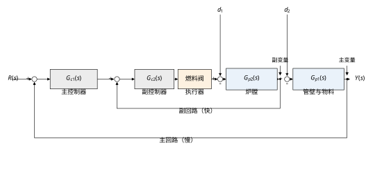
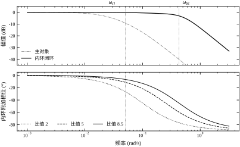
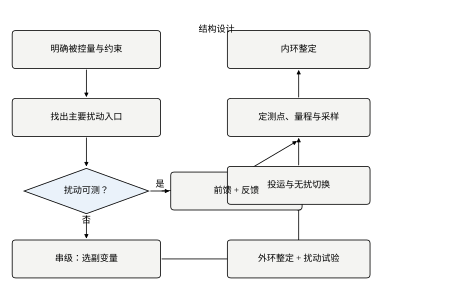
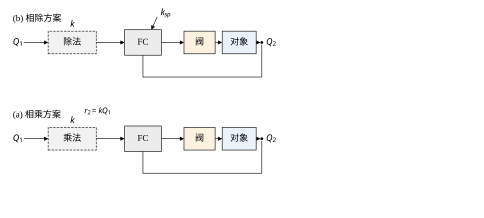
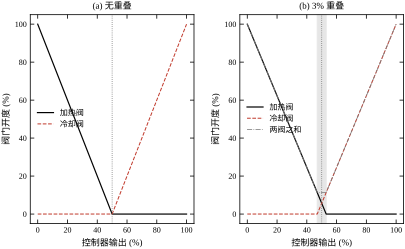
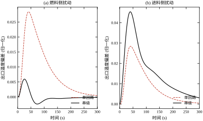
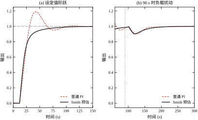
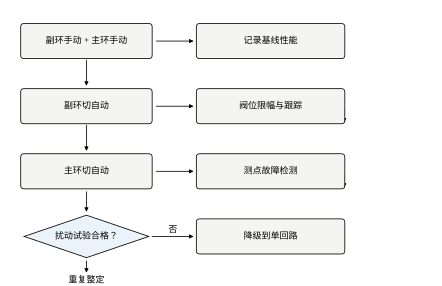
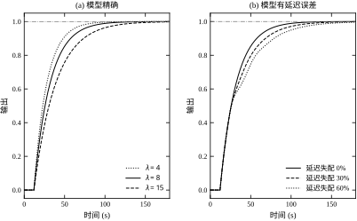

场景一：加热炉出口温度。 某常压炉要求出口温度稳定在 365\pm2\ ^{\circ}\mathrm{C}。最初用单回路 PID 直接控制燃料阀开度，反馈量是出口热电偶。燃料热值每半小时波动一次，出口温度要等到管壁蓄热被改变之后才开始偏移，此时热电偶读数已经晚了近一分钟。运行记录上，每次切换燃料，出口温度先冲高 6–9\ ^{\circ}\mathrm{C}，再被 PID 拉回，超调段持续两分多钟。后来把炉膛温度作为副变量、出口温度作为主变量构成串级，同样的燃料切换下，出口温度最大偏差降到 2\ ^{\circ}\mathrm{C} 左右，恢复时间缩短到四十秒以内。
两者的差别不在 PID 参数，而在信息到达控制器的时刻。单回路里，扰动要穿过“炉膛—管壁—物料”这条热惯性链才被看见；串级里，炉膛温度就在扰动入口旁边，燃料热值一变，炉膛温度先动，副回路立刻把阀门修正掉，扰动还没来得及传到出口就被压住了。
场景二：锅炉空燃比。 锅炉负荷变化时，燃料量与送风量必须保持一个比例，否则不是冒黑烟（风少）就是一氧化碳超标加排烟热损失（风多）。这里不存在“把某个温度控到某个值”的问题，控制目标是两个流量之间成比例。负荷是主动变化的，比例是约束，于是需要比值控制：一个流量自由（主流量），另一个流量按比例跟随（副流量），再叠加一个氧含量微调回路修正比例系数。
场景三：放热反应器的温度与压力。 反应器在正常工况靠冷却水撤热，开车阶段需要蒸汽加热，两者共用同一个温度控制器，但分别对应两个阀门的不同开度区间：控制器输出 0\%–50\% 时蒸气阀从全开走到全关，50\%–100\% 时冷却水阀从全关走到全开。这是分程控制。同时，反应器压力不允许超过某个上限，一旦压力接近联锁值，必须临时放弃温度控制、优先泄压，这就是选择性（超驰）控制。
三个场景对应三类“单回路不够用”的物理原因：扰动到来的位置不对、被控目标不是一个量、安全边界比控制质量更重要。本章的方法就是围绕这三条展开。
反馈控制的本质是“先出错、再纠正”。这个本质决定了它在三种情形下必然吃力。
第一条：扰动通道的滞后大于对象主导时间常数。 设扰动 d 到被控量 y 的通道为 G_d(s)，控制器到 y 的通道为 G_p(s)。扰动引起的偏差要经过 G_d 的时间延迟才被测量到，而控制器只能通过 G_p 施加反作用。若 G_d 含纯延迟 \tau 且 \tau 与 G_p 的响应时间可比，则控制器在偏差出现时已经“晚了 \tau”。即使 PID 参数调到最优，可达到的最小超调也受 \tau 限制。第 47 章讨论过 Smith 预估与内模控制如何用模型把这部分延迟“抵消”掉，本章只讲它们在复杂回路中的组合方式。
第二条：一个操纵变量不足以覆盖全部工况。 反应器既要加热又要冷却，蒸汽阀与冷却水阀的作用方向相反，不可能用一个连续信号同时驱动两个方向。分程控制用一个控制器输出、两个阀门、两段量程解决这个问题，代价是控制器在分程点附近的等效增益会突变。
第三条：存在不可逾越的安全边界。 压缩机喘振线、反应器超压、塔器液泛，这些边界一旦越过就是设备事故，不能用“PID 调好一点”来保证。选择性控制的做法是并行跑两个控制器，输出经过高选或低选，正常时温度控制器起作用，越界时安全控制器接管。这是一种结构上的优先级，不是参数上的折中。
把上述方法放在一起看，它们都在做同一件事：在反馈回路之外，增加一条更早的信息通道、一个更宽的权限通道，或一条硬性的优先规则。
| 方法 | 增加的通道 | 解决的物理问题 | 典型对象 |
|---|---|---|---|
| 串级 | 一个中间测点（副变量） | 扰动先被副变量感知 | 加热炉、精馏塔再沸器 |
| 前馈 | 扰动本身的测量 | 扰动可测且通道慢 | 换热器入口温度、负荷 |
| 比值 | 主流量测量 | 两个流量须成比例 | 燃烧空燃比、配比进料 |
| 分程 | 第二个执行器 | 工况跨越大、作用方向相反 | 反应器冷热切换 |
| 选择性 | 第二、第三个测点 | 安全边界优先于控制质量 | 压缩机防喘振、塔压保护 |
| Smith/IMC | 对象的动态模型 | 纯延迟不可反馈抵消 | 长管道、大容量滞后 |
这张表有一个共同前提：附加通道的可靠性必须高于它所保护的主回路。副变量测点坏了，串级会输出错误的阀位；前馈信号失真，前馈会把扰动放大；选择器的高选信号漂移，可能长期压制正常工作回路。因此复杂回路的工程工作量，很大一部分不在算法，而在测点校验、故障检测与无扰切换。
如果只记一句话：复杂回路不是把 PID 堆起来，而是在结构上把“测什么、控什么、谁先动、谁兜底”四件事定死；参数只是最后的微调。
图 107-1 给出本章的主示例：加热炉出口温度串级。主控制器 G_{c1} 的输出不是阀位，而是副控制器的设定值；副控制器 G_{c2} 直接驱动燃料阀。扰动 d_1（燃料热值）从副对象入口进入，d_2（进料流量与入口温度）从主对象入口进入。两个扰动的位置不同，被抑制的路径也不同：d_1 靠内环快速抑制，d_2 仍靠外环慢速抑制。

§107.2 推导串级回路的等效传递函数、内环带宽条件、比值与分程的增益关系、选择器的分段非线性，并给出 Smith 预估与内模控制的等价形式。§107.3 给出复杂回路的设计步骤：先定结构、再定测点、再定投运顺序。§107.4 与 §107.5 分别处理连续与离散实现，重点在采样周期分配与无扰切换。§107.6 讨论稳定性与性能的边界：内环必须比外环快多少、模型误差多大时 Smith 预估会失效。§107.7 逐参数说明主副控制器增益、积分时间、滤波时间常数、比值系数、分程点的作用方向与量级。§107.8 给现场整定顺序与经验值。§107.9 讨论抗积分饱和、变比值、增益调度等改进。§107.10 是工程落地：投运顺序、故障重构、验收测试。§107.11 说明每种结构的适用边界。§107.12 给出可直接运行的仿真代码。
以下内容本章不重复：PID 的基本形式与频域分解见第 44 章，简单回路的整定规则见第 106 章，Smith 预估的频域机理见第 47 章，多变量耦合与解耦见第 108 章，MPC 的约束处理见第 58 章。本章只在“组合与投运”这个层面上引用它们。
本节把六种结构写成统一的传递函数或分段映射，目的只有一个：让“内环该多快”“比值系数怎么进环路”“分程点为什么会引起增益突变”“选择器为什么会积分饱和”这四个问题有可计算的答案。
沿用图 107-1 的记号：主对象 G_{p1}(s)（炉膛到出口温度），副对象 G_{p2}(s)（燃料阀到炉膛温度），主控制器 G_{c1}(s)，副控制器 G_{c2}(s)。副变量为 y_2，主变量为 y，主设定值为 r。测量环节先按单位反馈处理，非单位的情况在 §107.6 讨论。
回路的代数关系是三行：
y_2=G_{p2}(u+d_1),\qquad y=G_{p1}(y_2+d_2),\qquad u=G_{c2}\left(G_{c1}(r-y)-y_2\right) \tag{107-1}
把第三行代入第一行，再代入第二行，消去 u 与 y_2，得到主变量对设定值的闭环：
\frac{Y(s)}{R(s)}=\frac{G_{c1}G_{p1}G_{c2}G_{p2}}{1+G_{c2}G_{p2}+G_{c1}G_{p1}G_{c2}G_{p2}} \tag{107-2}
记内环开环 L_2=G_{c2}G_{p2}、内环闭环 G_{2}^{cl}=L_2/(1+L_2)，式 (107-2) 可以写成
\frac{Y}{R}=\frac{G_{c1}G_{p1}G_{2}^{cl}}{1+G_{c1}G_{p1}G_{2}^{cl}} \tag{107-3}
式 (107-3) 是串级设计的基本依据：外环看到的对象，是“主对象乘以内环闭环”。只要 G_{2}^{cl} 在外环带宽内近似为 1，外环的设计就退化为对 G_{p1} 的单回路设计；内环的作用是把 G_{p1} 之前的那一段动态“藏起来”。
两个扰动通道更能说明问题。对 d_1（燃料热值，进入副对象入口）有
\frac{Y}{D_1}=\frac{G_{p1}G_{p2}}{(1+L_2)\left(1+G_{c1}G_{p1}G_{2}^{cl}\right)} =\frac{G_{p1}}{1+G_{c1}G_{p1}G_{2}^{cl}}\cdot\frac{G_{p2}}{1+L_2} \tag{107-4}
对 d_2（进料量，进入主对象入口）有
\frac{Y}{D_2}=\frac{G_{p1}}{1+G_{c1}G_{p1}G_{2}^{cl}} \tag{107-5}
两式对比很清楚：d_2 的抑制只靠外环，串级与单回路没有本质差别；d_1 多了一个因子 G_{p2}/(1+L_2)，在 |L_2|\gg1 的频段被内环衰减。换句话说，串级只对“从副对象进入”的扰动有效，对“从主对象进入”的扰动，收益仅来自内环把 G_{2}^{cl} 做得更接近 1 这一点点相位改善。
这条结论直接决定了副变量的选择：副变量必须位于主要扰动进入对象的位置下游、主变量上游。加热炉选炉膛温度而不是烟道温度，就是因为燃料热值扰动先影响炉膛；若选烟道温度，扰动已经过了炉膛的惯性，内环再快也来不及。
式 (107-3) 允许把两级控制器分开设计，但分开设计有前提：内环闭环在外环穿越频率附近必须已经接近 1。把内环闭环近似为一阶惯性
G_{2}^{cl}(s)\approx\frac{1}{T_2 s+1} \tag{107-6}
其中 T_2\approx1/\omega_{b2}，\omega_{b2} 为内环闭环带宽。外环在穿越频率 \omega_{c1} 处看到的附加相位滞后为 -\arctan(\omega_{c1}T_2)。要求这条附加滞后不超过 5^{\circ}，得
\omega_{b2}\ge\frac{\omega_{c1}}{\tan 5^{\circ}}\approx11.4\,\omega_{c1} \tag{107-7}
工程上常用的“内环比外环快 3–5 倍”是放宽到 10^{\circ}–18^{\circ} 附加滞后的口径，对应式 (107-7) 取 \tan10^{\circ}\approx0.176 得 \omega_{b2}\ge5.7\omega_{c1}，取 \tan18^{\circ}\approx0.325 得 \omega_{b2}\ge3.1\omega_{c1}。这个倍数不是越多越好：内环做得过快，阀门动作频繁、噪声放大、执行器磨损加剧。3–5 倍是“相位损失可接受、执行器还能承受”的折中点，不是理论最优。
图 107-2 把这条关系画了出来。左图是 |G_{p1}| 与 |G_{2}^{cl}| 的幅频特性，内环闭环在 \omega_{b2} 之后才开始下跌，而外环穿越频率 \omega_{c1} 落在此之前；右图是内环闭环的相位，标注了 \omega_{c1} 处的附加滞后。当 \omega_{b2}/\omega_{c1}=2 时附加滞后约 27^{\circ}，外环相位裕度被吃掉一大半；比值降到 1.2 时滞后接近 40^{\circ}，串级不但没有收益，反而比单回路更难稳定。

比值控制要求 Q_2=kQ_1，k 为比值系数。实现上有两条路，数学上不等价。
相乘方案：主流量测量值乘 k 作为副流量控制器的设定值，
r_2(t)=k\,Q_1(t) \tag{107-8}
副流量回路是定值跟踪，回路增益与 Q_1 无关，稳定性好。缺点是主流量测量噪声按 k 放大后直接进入副回路设定值，需要滤波；且主流量一旦失真，副流量跟着错。
相除方案：以 Q_2/Q_1 为被控量，控制器输出去修正比值系数，
e_k(t)=k_{sp}-\frac{Q_2(t)}{Q_1(t)} \tag{107-9}
相除方案的回路增益与 Q_1 成反比：负荷越低，同样的流量偏差引起的比值偏差越大，等效增益越高。低负荷时容易振荡，高负荷时反应迟钝。因此相除方案必须做增益补偿，或在低负荷段切换为相乘方案。
差压式流量计还有一层非线性。孔板流量与差压的关系为
Q=C\sqrt{\Delta p} \tag{107-10}
若控制器直接以 \Delta p 为测量值，则在小流量段对象增益 |\mathrm{d}Q/\mathrm{d}\Delta p| 很大，在大流量段很小，回路增益变化可达数倍。工程做法是加开方器，把 \Delta p 先开方再进控制器；开方器在小信号段会放大噪声，通常设一个小于 1% 的切除点。气体流量还需温压补偿：
Q_n=K\sqrt{\frac{\Delta p\cdot p}{T}} \tag{107-11}
补偿没做，比值在温度变化 20\ ^{\circ}\mathrm{C} 时就会偏 3% 以上，这个偏差在空燃比控制里足以造成明显的过剩空气系数漂移。
分程控制把控制器输出 u\in[0,1] 映射为两个阀位：
m_1(u)=\begin{cases}\dfrac{u_s-u}{u_s}, & 0\le u\le u_s\\[4pt] 0, & u>u_s\end{cases}, \qquad m_2(u)=\begin{cases}0, & u\le u_s\\[4pt] \dfrac{u-u_s}{1-u_s}, & u>u_s\end{cases} \tag{107-12}
其中 u_s 为分程点。控制器看到的等效对象增益为
\frac{\mathrm{d}y}{\mathrm{d}u}= \frac{\partial y}{\partial m_1}\left|\frac{\mathrm{d}m_1}{\mathrm{d}u}\right| +\frac{\partial y}{\partial m_2}\left|\frac{\mathrm{d}m_2}{\mathrm{d}u}\right| \tag{107-13}
在 u_s=0.5 时两段斜率分别为 1/u_s=2 与 1/(1-u_s)=2，若两个阀门的对象增益相近，分程点两侧的回路增益都比单阀时大一倍。这就是“分程回路在切换点附近容易振荡”的数学原因。解决方式有三种：把分程点错开、让两段量程有 2%–5% 的重叠、或按段做增益调度。图 107-4 给出带重叠与不带重叠两种分程特性的对比，重叠段两阀同时微动，消除了增益为零的死区。
选择性控制的输出为
u(t)=\max\{u_1(t),u_2(t)\}\quad\text{或}\quad u(t)=\min\{u_1(t),u_2(t)\} \tag{107-14}
以高选为例，实际起作用的是输出较大的那一路。设 u_1 为正常控制器、u_2 为安全控制器。正常工况 u_1>u_2，u_1 闭环；越界后 u_2>u_1，u_2 接管。被切换下来的控制器如果没有做外部反馈跟踪，其积分项会持续累积，偏差越大累积越快，等工况恢复、需要它重新接管时，输出已经冲到限幅值，造成长时间的反向冲击。这就是选择器回路必须配“抗积分饱和 + 输出跟踪”的原因，具体实现见 §107.5.3。
纯延迟 e^{-\tau s} 在闭环特征方程里以 1+C G_p e^{-\tau s}=0 的形式出现，延迟越大，可用的控制器增益越低（第 47 章给出了频域解释）。Smith 预估的做法是把延迟移到回路之外：用模型 \tilde G_p=\tilde G\,e^{-\tilde\tau s} 构造补偿器
C_{smith}(s)=\frac{C(s)}{1+C(s)\tilde G(s)\left(1-e^{-\tilde\tau s}\right)} \tag{107-15}
模型精确时，闭环特征方程变为 1+C\tilde G=0，延迟被完全移出特征方程，控制器可以按无延迟对象整定。内模控制（IMC）给出同一结果的另一种写法。取内模控制器
Q(s)=\tilde G_{-}^{-1}(s)f(s),\qquad f(s)=\frac{1}{\lambda s+1} \tag{107-16}
其中 \tilde G_{-}^{-1} 为模型最小相位部分的逆，\lambda 为滤波时间常数。等效反馈控制器为
C_{imc}(s)=\frac{Q(s)}{1-Q(s)\tilde G(s)} \tag{107-17}
对一阶加纯延迟对象 \tilde G=Ke^{-\tau s}/(Ts+1)，把式 (107-16) 代入并做一阶泰勒近似 e^{-\tau s}\approx1-\tau s，得到 PI 形式
K_c=\frac{T}{K(\lambda+\tau)},\qquad T_i=T \tag{107-18}
式 (107-18) 说明 \lambda 是唯一的设计参数：\lambda 越小，增益越高、响应越快、对模型误差越敏感。Smith 预估与 IMC 在模型精确时闭环等价，区别在于参数化方式：Smith 直接调 C(s)，IMC 调 \lambda，后者把“鲁棒性—快速性”的折中变成一个一维旋钮，现场更容易交代。§107.6.3 给出 \lambda 与模型误差的定量关系。
前馈控制器由不变性原理给出。设扰动 d 到 y 的通道为 G_d，控制到 y 的通道为 G_p，要求 d 对 y 无影响，则
G_{ff}(s)=-\frac{G_d(s)}{G_p(s)} \tag{107-19}
理想前馈要求 G_{ff} 物理可实现：分子阶次不高于分母、不含正幂次。多数工业对象做不到，工程上取静态前馈加一阶超前滞后：
G_{ff}(s)=K_{ff}\frac{T_1 s+1}{T_2 s+1},\qquad K_{ff}=-\frac{K_d}{K_p} \tag{107-20}
静态增益 K_{ff} 保证稳态无差，动态项补偿通道时间常数的差异。前馈不改变闭环稳定性（它不在反馈环内），但前馈信号失真时会直接注入扰动，因此前馈通道必须能单独投切，并在投切时做无扰处理。
前面六小节是分头推导的，其实它们可以塞进同一个框架：每一种复杂结构，都是在改变“扰动到被控量”这条通道上的某一个因子。
先看反馈回路的通用形式。设开环 L=G_cG_p，灵敏度函数与补灵敏度函数分别为
S(s)=\frac{1}{1+L(s)},\qquad T(s)=\frac{L(s)}{1+L(s)}=1-S(s)
任何从对象入口进入的扰动，到被控量的传递都写成 G_dS。|S(j\omega)| 在低频远小于 1、在高频趋于 1，这条“低通抑制、高通放过”的形状，是反馈控制全部能力的来源，也是全部局限的来源：控制器只能在 |L|>1 的频段内抑制扰动，超出这个频段就无能为力。
用这个框架重看六种结构，各自的着力点一目了然：
这张“因子表”有一个实用价值：当有人提出“再加一层结构”时，可以先问“它改的是哪个因子、在哪个频段起作用”。若答不出来，这个结构大概率只是增加了复杂度。
上述框架还能把三条常用判据还原成同一个不等式。
第一条，带宽分离。要求内环在外环穿越频率处“已经不起作用”，即 |S_2(j\omega_{c1})|\ll1，等价于 |L_2(j\omega_{c1})|\gg1。把 L_2 近似为积分加惯性，就得到式 (107-7) 的 \omega_{b2}\ge3\omega_{c1}。所以“3–5 倍”不是经验口号，而是 |S_2| 在 \omega_{c1} 处要小于约 -10 dB 的另一种说法。
第二条，前馈静态增益。令 s\to0，要求 G_d(0)-G_{ff}(0)G_p(0)=0，即 K_{ff}=-K_d/K_p。这条与动态补偿无关，所以现场可以先把静态增益单独标定、单独验证，不必等动态项调好。
第三条，Smith 预估的有效性。模型精确时，特征方程从 1+CG_pe^{-\tau s}=0 变成 1+C\tilde G=0，延迟不再出现在特征方程里，S 的相位不再随频率线性下降。换句话说，Smith 不是在“预测未来”，而是在把延迟从稳定性的约束里移走。这也解释了为什么它不能改善不可测扰动：扰动通道的延迟还在，S 对这个通道的作用没有变化。
三条判据的共同前提是模型可信。模型不准时，第一条的带宽比算不准，第二条的静态增益符号可能反，第三条的延迟补偿会变成“补偿过头”。所以设计阶段的第一件事不是选结构，而是把模型辨识到可用的精度。
本节所有推导都建立在五条假设上。写清楚它们，不是为了严谨而严谨，而是因为现场失效的回路，多半是某条假设被悄悄破坏了。
假设一：对象线性、时不变。 推导中把 G_{p1}、G_{p2} 当作常系数传递函数。实际炉膛的辐射换热在高温段与低温段增益不同，阀门在小开度段增益低，这些都会让“算出来的带宽比”在现场对不上。处理办法是在主要工作点附近线性化，并把工作点写进设计文档。
假设二：测量为单位反馈、无动态。 式 (107-2) 默认 H=1。实际热电偶有保护套管，时间常数可达几十秒；流量变送器有滤波，时间常数几秒。测量动态串在回路里，等效于给对象再加一个惯性，相位裕度会下降。副变量的测量动态尤其要注意，它直接吃掉内环带宽。
假设三：执行器线性、无饱和。 分程的增益推导假设阀位与流量成线性关系。实际阀门有死区、回差、等百分比特性，§107.4.4 已说明这会让两段的等效增益不同。饱和的影响更大：一旦副环饱和，串级就退化为开环，式 (107-3) 不再成立。
假设四：扰动是确定性的阶跃。 推导与仿真都用阶跃扰动，便于比较。实际扰动是随机过程，评价指标应当是方差或功率谱，而不是单一峰值。用阶跃结论去指导随机扰动下的整定，方向正确，量级会偏乐观。
假设五：控制器连续、无计算延迟。 离散化的影响在 §107.5 单独处理。这里只需记住：采样与计算延迟都表现为附加相位，它们与内环滞后叠加，是“仿真通过、现场振荡”的常见原因。
五条假设里，最容易被忽略的是第二条。很多回路在设计阶段算得好好的，投运后发现内环带宽达不到，查到最后是副变量热电偶的套管太粗。这类问题的代价很高——改套管意味着停机开孔，而设计阶段只需在模型里加一个一阶环节就能发现。所以本章反复强调：先辨识、再设计，测量动态必须进模型。
本节公式多，符号容易混。统一约定如下：G_{p1}、G_{p2} 为对象，量纲是“被控量/阀位”；G_{c1}、G_{c2} 为控制器，量纲是“阀位/被控量”，两者相乘无量纲；K_c 无量纲，T_i、T_d、\lambda、\tau 的单位是秒；比值系数 k 的量纲是“副流量/主流量”。
这套约定带来三条可以随时自检的规则。
第一，开环 L 必须无量纲。若算出 L 带单位，说明对象或控制器的量纲写反了。串级的 L_1=G_{c1}G_{p1}G_{2}^{cl} 里，G_{2}^{cl} 是无量纲的，所以 L_1 与单回路的 G_cG_p 同量纲，两者可以直接比较裕度。
第二，式 (107-18) 的右边必须无量纲。T/[K(\lambda+\tau)] 中，T 与 \lambda+\tau 同为秒，K 是对象增益（被控量/阀位），所以 K_c 的量纲是“阀位/被控量”，与控制器增益一致。若对象的 K 用百分比而控制器用小数，算出的 K_c 会差 100 倍，这是仿真与实际对不上时的第一嫌疑。
第三，式 (107-12) 的分程映射必须落在 [0,1]。把 u=0 代入得 m_1=1、m_2=0；把 u=1 代入得 m_1=0、m_2=1。两条边界都满足，说明映射写对了。若某一端超出 [0,1]，多半是 u_s 与重叠量的位置搞反了。
量纲检查看起来是小事，实际能拦住大部分“公式抄错”的低级错误。本章的仿真之所以可信，一部分原因就是每个公式在写进代码前都过了这三条检查。
复杂回路的设计顺序不能从“选一个算法”开始，而要从“这个回路要挡住什么”开始。工程上按下面五步走，每一步都有可检查的产出。
第一步：写清被控量与约束。 被控量要带单位、量程、允许偏差和积分时间。例如“出口温度 365\pm2\ ^{\circ}\mathrm{C}，超差超过 5 min 记一次不合格”，而不是“温度要稳”。约束要单列：哪些阀位不允许长期处于某个区间、哪些测点失效时必须切手动、联锁值是多少。约束写得越具体，后面的结构选择越没有争议。
第二步：找扰动入口，按频段排序。 把主要扰动列成表，每条写清“从哪进入、幅值多大、变化多快、可否测量”。加热炉的典型结果是：燃料热值（幅值大、变化慢、不可测）、进料流量（幅值中、变化快、可测）、环境温度（幅值小、极慢、可测）。不可测且幅值大的扰动，才值得为它增加一个中间测点做串级；可测的扰动优先考虑前馈，因为前馈不改变稳定性。
第三步：按判据选结构。 表 107-1 把六种结构的适用条件压成一张判据表。使用时从上往下匹配，先满足的优先，因为越靠上的结构越简单、投运风险越低。
| 结构 | 必要条件 | 不满足时会怎样 | 相对成本 |
|---|---|---|---|
| 单回路 | 扰动可反馈、无硬约束 | — | 1 |
| 前馈 | 扰动可测、通道模型可得 | 前馈失真会放大扰动 | 1.3 |
| 串级 | 存在可测中间变量、内环可比外环快 3 倍 | 副环拖慢主环，性能反降 | 1.5 |
| 比值 | 两个流量须成比例、主流量可测 | 低负荷增益失配 | 1.4 |
| 分程 | 一个控制器驱动两个反向执行器 | 分程点增益突变、振荡 | 1.8 |
| 选择性 | 存在明确的安全边界与备用测点 | 切换冲击、积分饱和 | 2.0 |
第四步：定测点、量程与采样。 副变量的量程要覆盖扰动最恶劣时的波动，通常按正常值的 1.5–2 倍选取；量程过大则分辨率不足，副环会把量化噪声当成偏差。采样周期按 §107.5 的规则分配：内环采样周期不大于内环时间常数的十分之一，外环不大于内环采样周期的 5 倍。测点位置要画在工艺流程图（P&ID）上，标明插入深度、保护套管和校验口。
第五步：定投运顺序与降级方案。 串级必须先投副环、再投主环；分程必须先单阀试、再切分程；选择性必须先校验被压制回路的跟踪。降级方案要写清“副变量故障时切到什么结构、由谁确认”。这部分在 §107.10 展开。
图 107-3 把五步法画成流程。注意判断框只有一个：“扰动可测？”——可测就走前馈加反馈，不可测才走串级。现场常见的错误顺序是先搭串级、再回头找副变量，结果副变量与扰动无关，内环再快也没有意义。

副变量选错是串级失败最主要的原因，比参数整定错误更常见。四条准则按重要性排序：
准则一：副变量必须位于主要扰动的下游、主变量的上游。 这是 §107.2.1 的式 (107-4) 的直接推论。燃料热值扰动从炉膛进入，炉膛温度在它的下游；出口温度在更下游，但已经太慢；烟道温度在炉膛之后、出口之前，看起来也在下游，但它经过了炉膛的大惯性，扰动到达时已经被滤波，副环失去“提前量”。
准则二：副变量对操纵变量的响应必须明显快于主变量。 定量口径是内环闭环带宽不小于外环穿越频率的 3 倍，理想 5–10 倍，见式 (107-7)。判据来自阶跃试验：副变量达到 63% 的时间应小于主变量同类时间的 1/3。达不到就不要做串级，改用前馈或模型补偿。
准则三：副变量对主要扰动要敏感，对主变量的耦合要弱。 敏感度用“扰动单位幅值引起的副变量变化”与“噪声水平”之比衡量，一般要求信噪比大于 5。耦合弱是指副变量不要同时受另一个控制回路的操纵变量强烈影响，否则两个回路会通过副变量打架。
准则四：副变量的测量必须可靠、可校验。 副变量通常装在高温、高粉尘、强振动的位置，热电偶断线、保护套管结焦都会让副环输出错误阀位。工程上要求副变量有变化率判别与偏差报警，并在失效时自动切回单回路。
四条准则不满足时，宁可退回单回路加前馈。一个能投运的单回路，比一个参数漂亮但天天切手动的串级有价值。
多种结构可以叠加，但叠加顺序影响调试难度。推荐的组合顺序是：
这个顺序的理由是：每加一层都要有独立的验收数据，否则出问题时无法定位是哪一层引起的。现场常见的做法是一次性把所有结构投上，然后靠“整体看起来还行”验收，一旦工况变化就找不到原因。
设计完成、动工之前，至少做三个量化检查，避免把结构错误带到现场。
检查一：内环带宽比。 用辨识得到的模型算出 G_{2}^{cl} 的带宽与主回路预期穿越频率，确认比值不小于 3。若模型不全，用阶跃试验的 63% 时间粗估。
检查二：执行器行程与速率。 用历史数据统计主回路输出在正常工况下的标准差，乘以 3 作为动态行程需求；再检查阀门从 10% 走到 90% 的时间是否小于内环时间常数的 2 倍。行程或速率不够时，串级会在扰动来时饱和，效果不如单回路。
检查三：测点故障后的行为。 逐个假设“某测点断线、漂移、卡死”，推演回路行为，确认不会出现“副环把阀门顶到极限”或“选择器长期压制正常回路”的后果。这一项在 DCS 组态阶段就要用仿真或旁路试验验证，不能留到投运。
设计做完，要留下能交给别人的东西。最小集合是五份：一张标注了副变量位置与测点编号的 P&ID；一张含全部跟踪链与选择器逻辑的信号流图；一张参数表，每个参数后面写清“初值从哪来”；一份失效模式推演，逐个测点写“坏了会怎样、怎么降级”；一份验收判据，把 §107.10.5 的表格填上本回路的具体数值。
这五份里最容易被省略的是参数表的“依据”一栏。只写数值不写依据，半年后换人维护时，没人知道 T_i=90 s 是按主导时间常数算的，还是现场试出来的。遇到工况变化，也就无从判断该不该改。工程上要求每个参数至少写一句依据，例如“T_{i1}=2T_{p1}，按主导时间常数 45 s 取 90 s”，这句话在后续所有争议里都是锚点。
三个量化检查中任何一项不通过，都不应当“先投上再说”。带宽比不足时，正确的处理是改副变量位置或退回单回路加前馈，而不是硬调参数；执行器行程不足时，应当核算阀门选型或增加旁路，调参只会让饱和更频繁；测点故障行为不明确时，必须先补组态逻辑，再谈投运。设计阶段发现问题的修改成本，通常是投运后的十分之一。
本节用一组可复现的参数说明串级的实际效果，全部数字来自 code/ch107_sim.py 的运行输出。副对象取
G_{p2}(s)=\frac{1}{(6s+1)(1.5s+1)},\qquad G_{p1}(s)=\frac{1.6}{(45s+1)(12s+1)} \tag{107-21}
主控制器 G_{c1} 为 PI，K_c=1.8、T_i=90 s；副控制器 G_{c2} 为 PI，K_c=2.0、T_i=8 s。单回路对照组的 PID 参数为 K_c=2.6、T_i=70 s、T_d=12 s，其相位裕度 66.7°、增益裕度 15.4 dB，属于保守整定，不是“故意调坏”的对照组。
计算结果如下。内环闭环带宽 \omega_{b2}=0.427 rad/s，外环穿越频率 \omega_{c1}=0.050 rad/s，比值 8.5，满足式 (107-7)。串级的相位裕度 59.3°、增益裕度 15.8 dB，与单回路相当，说明两者是在同一鲁棒性水平上比较。
| 指标 | 串级 | 单回路 | 说明 |
|---|---|---|---|
| 设定值超调 | 4.7% | 0.3% | 串级外环多一层滞后 |
| 上升时间 (s) | 26.0 | 16.7 | 同上 |
| 调节时间 (s) | 221 | 83.9 | 外环积分受内环制约 |
| 燃料侧扰动峰值 | 0.0060 | 0.0284 | 串级降到 1/4.8 |
| 燃料侧恢复 (s) | 85.1 | 214.8 | 串级快 2.5 倍 |
| 进料侧扰动峰值 | 0.0452 | 0.0284 | 串级反而差 1.6 倍 |
| 进料侧恢复 (s) | 334.9 | 214.8 | 同上 |
这张表把串级的账算清楚了：它对从副对象进入的扰动收益明显，峰值降到单回路的 21%，恢复时间缩短到 40%；对从主对象进入的扰动，不但没有收益，反而因为外环必须给内环留相位余量而降速，峰值和恢复时间都变差。这正好印证式 (107-4) 与式 (107-5) 的差别。
因此“串级一定比单回路好”是错的。正确的说法是：串级把性能预算从主对象入口转移到了副对象入口。选用之前必须先确认主要扰动从哪边进来。加热炉的燃料热值扰动从副对象进入，串级合适；若主要扰动是进料流量与入口温度，则前馈更合适，串级反而添乱。
前馈的连续实现分两部分。静态部分由式 (107-20) 的 K_{ff} 给出，工程上用一个乘法系数或加法偏置实现；动态部分用超前滞后环节补偿通道时间常数差。以换热器入口温度前馈为例：入口温度升高 \Delta T_{in}，被控出口温度会升高 K_d\Delta T_{in}，为抵消它，蒸汽阀需要减小 \Delta u=K_d\Delta T_{in}/K_p。这个比值就是静态前馈系数。
静态前馈只能保证稳态，动态过程中两个通道的时间常数不同，前馈量会“到得太早或太晚”。超前滞后的时间常数按两个通道的主导时间常数之比选取：扰动通道慢于控制通道时用超前（T_1>T_2），反之用滞后。参数不必精确，因为前馈只承担“粗调”，剩余的偏差由反馈消除。
前馈投运必须做三件事：第一，前馈通道设独立的投切开关与斜率限制，避免阶跃式投入；第二，前馈信号加一阶滤波，滤掉测量噪声，滤波时间常数取扰动通道时间常数的 1/10–1/5；第三，前馈输出限幅，防止扰动测量异常时把阀门推到极限。这三件事不做，前馈在稳态运行时看不出问题，一旦扰动测量跳变就会造成生产事故。
图 107-4 给出两种比值方案的连续结构。相乘方案里，主流量 Q_1 经乘法器乘 k 后作为副流量控制器 FC 的设定值，FC 的输出直接驱动副流量阀；相除方案里，Q_2/Q_1 的比值作为被控量，控制器输出修正比值系数 k。

相乘方案的回路增益与负荷无关，因为副流量回路始终在跟踪一个外部设定值；相除方案的回路增益与 Q_1 成反比，30% 负荷时的等效增益是满负荷的 3.33 倍。这个数字不是小差别：按满负荷整定的比例增益，到 30% 负荷时等效增益变成 3.33 倍，相位裕度被吃掉大半，表现为低负荷时阀门来回晃。解决办法有两个：一是按负荷做增益调度，把控制器增益乘以 Q_1/Q_{1,\max}；二是低负荷段切换到相乘方案。
差压流量计的开方与温压补偿在 §107.2.3 已给出。这里补充一个数量级：若流量量程比为 25:1，最小流量对应差压为满量程的 1/625，若不开方，该点的对象增益是满量程点的 25 倍。这个倍数足以让同一个 PID 参数在大量程比下无法同时满足高低负荷。
图 107-5 给出分程特性的两种情况。左图无重叠，两个阀在 u=50\% 处交接，交接点两侧斜率都是 2，等效增益是单阀时的两倍；右图取 3% 重叠，加热阀在 u=47\% 开始关、冷却阀在 u=47\% 开始开，交接区两阀同时微动，斜率从 2.0 降到 1.887。

斜率的绝对值只降了 5.7%，看起来不大，但作用不同：无重叠时交接点存在一个“两阀都接近关闭”的死区，控制器输出在 50% 附近小幅变化时被控量几乎不动，积分项会持续累积，穿过死区后突然释放，形成周期性的小振荡；有重叠时两阀的总开度曲线在交接区保持单调，死区消失，积分不再累积。这就是工程上常说的“分程必须搭接 2%–5%”的由来。
分程还有两个容易被忽略的连续性问题。第一，两个阀的流量特性不同（一个是等百分比、一个是线性），同一个控制器输出在两段的等效增益不同，整定时应按增益较大的一段取保守值。第二，分程阀的气开/气关组合决定了故障位置，必须保证仪表风失去时两个阀都走向安全侧，这一条在 §107.10 的故障重构里再展开。
表 107-2 里最容易被误读的一行是“进料侧扰动峰值 0.0452 对 0.0284”。串级为什么会在自己“不该管”的通道上变差？答案在外环穿越频率：串级 0.050 rad/s，单回路 0.076 rad/s，前者只有后者的 66%。而进料侧扰动的抑制完全由外环承担，穿越频率降低意味着 |S_1| 在扰动的主要频段抬高，峰值自然变大。
两者的比值 0.0452/0.0284 = 1.59，与穿越频率之比 0.076/0.050 = 1.52 几乎一致。这不是巧合：对于低频为主的阶跃扰动，闭环偏差峰值近似与穿越频率成反比。外环让出的速度，会原样出现在主对象入口扰动的抑制上。这句话可以当成串级设计的一条估算规则：若已知单回路的扰动峰值，把穿越频率的降低倍数乘上去，就是串级在该通道上的预期峰值。
反过来，d_1 通道的改善不能用穿越频率解释。串级峰值 0.0060、单回路 0.0284，改善 4.8 倍，而穿越频率只差了 1.5 倍。多出来的 3 倍来自内环灵敏度 S_2 在扰动频段的衰减——这正是式 (107-4) 里那个额外因子 G_{p2}/(1+L_2) 的贡献。一个是“外环变慢的代价”，一个是“内环变快的收益”，两者叠在一起，才是表 107-2 的全部内容。
第一个反直觉：串级主环的增益比单回路低 30%（1.8 对 2.6）。很多现场调试人员会本能地把主环增益往上加，认为“多了一层内环，应该更好控”。实际相反：内环闭环在 0.05 rad/s 处已经贡献了相位滞后，主环若保持单回路的增益，等于在同样的相位裕度上再借一笔债，结果就是本章调试记录里的 52.7% 超调。
第二个反直觉：串级主环的积分时间比单回路长 29%（90 s 对 70 s）。积分时间加长会让残余偏差消除变慢，看起来是“性能退步”，但它换来的是超调从 19.8% 降到 4.7%。原因同样在相位：积分器在低频贡献 -90^{\circ}，内环又在小信号上贡献了一部分滞后，主环只能用更长的积分时间把积分作用的“入场频率”往下压，避免在穿越频率附近叠加过多滞后。
这两个结果合起来说明一件事：串级的参数不是“单回路参数加一层”，而是重新分配相位预算。内环拿走了一部分，外环就必须让出一部分；让出的方式就是降增益、加积分时间。理解了这一点，就不会再把“主环比单回路慢”当成整定不到位。
表 107-2 的对比常被质疑：串级用 PI、单回路用 PID，是不是给单回路“加了装备”？这个质疑有道理，需要正面回答。
先看微分项起了什么作用。单回路的 PID 在 0.076 rad/s 处穿越，微分时间 12 s 对应的零点在 1/12=0.083 rad/s，正好落在穿越频率附近；扣除微分滤波极点的影响后，提供约 40^{\circ} 的相位超前。没有这个零点，同样的对象用 PI 只能做到更低的穿越频率。所以 PID 确实让单回路的“最好成绩”更好看了。
但这不是不公平，而是结构与执行器的匹配。单回路直接驱动阀门，控制器能看到阀位与对象之间的全部动态，微分项有明确的补偿对象；串级的外环看不到阀门，它看到的只是内环闭环，微分项在这里补偿的是内环的等效滞后，物理意义已经变了。给外环硬加微分，容易把内环的高频噪声放大后送进副环设定值。
真正公平的比较方式有两种。第一种是限定同一控制器形式：都用 PI，重新整定单回路到相位裕度 59.3°，再比较扰动指标。第二种是限定同一相位裕度：让单回路也降到 59.3°。本章选择了“各自在合理裕度下取较好参数”，并把两组的裕度都列出来（59.3° 与 66.7°），读者可以据此判断差异有多少来自结构、多少来自整定。
结论是：表 107-2 里串级在 d_1 通道上的 4.8 倍优势是结构带来的，不会因为对照组换整定而消失；而它在 d_2 通道上的劣势有一部分来自“外环为内环让路”，若把单回路也压到同一裕度，差距会缩小，但不会反转为优势。方向的结论稳健，具体倍数依赖整定。
上述结论要在现场复现，需要一个可控的对比方法。很多“串级投了没效果”的结论，其实是比较方法不对。
正确做法是同一扰动、同一幅值、同一工况下的 A/B 对比。先在单回路状态下记录一次燃料阀阶跃（例如 5%）引起的出口温度响应，记下峰值与恢复时间；再切到串级，重复同样的阶跃，比较两条曲线。两次试验之间要等温度回到稳态，且进料量、环境温度没有明显变化。若做不到同工况，至少要在趋势图上标注两次试验的负荷，否则数字没有可比性。
对比时看两个量，不要看三个以上。第一是峰值偏差，它反映扰动入口的抑制能力；第二是恢复时间，它反映回路的带宽。上升时间在扰动试验里意义不大，因为扰动响应没有“设定值”可追。有些调试报告把超调、上升、调节、峰值、恢复全列出来，反而掩盖了真正的差别。
还有一个容易被忽略的细节：阶跃幅值要与实际扰动同量级。用 20% 的阀位阶跃去比较，回路会进入饱和，两组都饱和，看不出结构差异；用 1% 的阶跃，噪声会淹没响应。5%–10% 是常用区间，既能让响应明显高于噪声，又不会触发限幅。
若现场不允许做阶跃，可用“自然扰动”做对比：选一段燃料热值自然波动的时段，分别记录单回路与串级下的出口温度标准差。标准差之比能反映抑制能力，但需要足够长的数据（至少几十个波动周期），否则统计意义不足。
串级有两个采样周期，不能取同一个值。分配规则由带宽比决定：内环采样周期 T_{s2} 应不大于内环闭环时间常数的十分之一，外环采样周期 T_{s1} 取 T_{s2} 的 3–5 倍。以 §107.4 的参数为例，内环闭环带宽 0.427 rad/s 对应时间常数约 2.3 s，取 T_{s2}=0.2 s，相当于每个时间常数采样 11.5 次；外环取 T_{s1}=1 s，是内环的 5 倍。
采样保持引入的附加相位为
\varphi_{zoh}=-\frac{\omega T_s}{2}\quad(\mathrm{rad}) \tag{107-22}
在 \omega_{c1}=0.050 rad/s 处，T_{s1}=1 s 只带来 1.4^{\circ} 的附加滞后；但在内环带宽 0.427 rad/s 处，T_{s2}=0.2 s 带来 2.4^{\circ}。两者都远小于内环为外环预留的 10^{\circ}–18^{\circ} 余量，说明这组采样周期是安全的。反过来，若把外环也做到 0.2 s，计算量增加 5 倍而相位只改善 1.1^{\circ}，不划算；若把内环放到 1 s，内环带宽处的附加滞后升到 12^{\circ}，加上原有的相位滞后，内外环带宽比会从 8.5 掉到 3 附近，串级退化为“两个慢回路串联”。
工业 DCS 的常规控制任务扫描周期多为 0.5 s 或 1 s，快速任务可到 100–200 ms。设计时要先确认控制器的任务周期，再反算能支持的内环带宽。若工艺要求的内环带宽超过 DCS 快速任务的能力，应把内环下放到专用控制器或现场总线设备，而不是硬把两个回路塞进同一个慢任务。
复杂回路的投运与故障处理都涉及“手动/自动”和“内环/外环”的切换，切换瞬间输出不允许跳变。实现无扰切换的标准做法是跟踪 + 初始化：
手动时，控制器不按偏差积分，而是让积分项跟踪实际输出：
I(k)=u_{man}(k)-K_c e(k) \tag{107-23}
其中 u_{man} 为手动输出。这样切到自动的瞬间，控制器输出恰好等于手动值，不会跳变。自动运行期间，积分项按常规累加；一旦切回手动，立即恢复式 (107-23) 的跟踪。
串级的主副环切换还要多一层：主环手动时，主控制器输出跟踪副控制器的设定值；主环自动、副环手动时，副控制器输出跟踪阀位。三类跟踪关系必须同时组态，缺一条就会在切换时产生冲击。工程上把这组逻辑称为“无扰切换链”，调试时逐条验证：主环手动→自动、副环手动→自动、串级→单回路、单回路→串级，四个方向都要看输出是否连续。
切换冲击的量级可以直接算出来。没有跟踪时，切到自动的瞬间输出为 u=K_ce+I，而 I 停留在上一次自动运行的值；若切换时偏差为 5%、K_c=2.0，仅比例项就带来 10% 的阀位阶跃。这个阶跃会被对象积分成一次明显的温度波动，操作员看到的是“一投自动就冲一下”，于是更不愿意投自动，形成恶性循环。有跟踪时，I 被式 (107-23) 重置，输出等于手动值，阶跃为零。
跟踪的刷新周期也要注意。若跟踪逻辑只在切换瞬间执行一次，而手动期间实际阀位在缓慢漂移（阀门爬行、定位器零点漂移），切换时仍会有一个小台阶。正确做法是手动期间每个扫描周期都刷新跟踪值，让控制器输出始终贴着实际阀位。这一点在 DCS 里通常由“输出跟踪”功能块自动完成，自己写逻辑时容易漏掉。
选择器回路的离散实现比连续情形多两个动作：选择与回算。每个扫描周期按下面的顺序执行：
第 4 步是核心。没有它，被压制的控制器会持续积分，偏差越大累积越快。§107.6.4 的仿真给出对比：同样的切换过程，无跟踪时被控量峰值 0.856，超调 55.7%；有跟踪时峰值 0.550，超调接近零。差别不是参数能弥补的，必须靠结构。
回算有两种写法。一种是“输出跟踪”：直接把积分项设为使控制器输出等于实际输出的值，即式 (107-23) 的变形；另一种是“外反馈”：把实际输出作为积分器的输入，代替控制器自身的输出。两种在稳态等价，动态上外反馈更平滑，DCS 组态里更常用。
Smith 预估在离散实现里是一个长度为 N_d=\mathrm{round}(\tau/T_s) 的环形缓冲区。每个周期把模型无延迟输出 y_m(k) 压入缓冲区，取出最早的值 y_m(k-N_d)，反馈信号为
y_{fb}(k)=y(k)+y_m(k)-y_m(k-N_d) \tag{107-24}
缓冲区长度必须与实际延迟匹配。若实际延迟是 12 s、采样 0.5 s，缓冲区应为 24 个单元；把 24 写成 25，相当于模型延迟多了 0.5 s，反馈信号会周期性出现 0.5 s 的“预测偏差”。这个偏差在稳态看不出来，在设定值阶跃时会表现为一个小台阶。
延迟估计误差的影响在 §107.6.3 用数据说明。这里只强调实现层面的两点：第一，缓冲区长度要允许在线修正，工艺改线或负荷大幅变化后延迟会变；第二，模型增益与时间常数要用辨识结果，不要用设计手册的典型值，因为 Smith 对增益误差的敏感度高于对延迟误差的敏感度。
本章示例的计算量很小：内环一个 PI、外环一个 PI、一个选择器或分程映射，单次扫描的浮点运算在几十次量级。真正的约束不是算力，而是任务周期与数据一致性。同一回路的输入采样、控制计算、输出刷新必须在一个任务里完成；跨任务传递要加时间戳，避免用上一周期的测量值配这一周期的输出。
多回路共存时，按周期分任务：快速任务放内环与选择性回路，慢速任务放外环、比值与报警。分任务后要检查“慢任务的数据被快任务读取”时的时序，必要时在快任务里对慢变量做零阶保持。这个细节在单回路调试时看不出问题，在扰动来临时会造成半个周期的相位错位。
仿真与现场组态都要面对“连续设计、离散实现”的落差。两种常用方法的适用对象不同。
零阶保持（ZOH） 对应执行器在一个采样周期内保持输出不变，是对象的物理事实，所以对象模型必须用 ZOH 离散化。它引入的相位滞后就是式 (107-22)，在内环带宽 0.427 rad/s、T_{s2}=0.2 s 时为 2.4^{\circ}。
双线性（Tustin） 对应控制器内部的积分与微分近似，它在低频的相位误差比前向差分小得多，且能把左半平面稳定地映射到单位圆内。控制器离散化优先用它，并在穿越频率处做频率预畸变：把设计频率 \omega_c 代入 \omega_a=\frac{2}{T_s}\tan\frac{\omega_cT_s}{2}，用 \omega_a 代替 \omega_c 设计连续控制器，离散后的穿越频率才落在设计值上。
本例 T_{s2}=0.2 s、\omega_c=0.427 rad/s，\omega_cT_s/2=0.043 rad，\tan 与自变量相差不到 0.1%，预畸变可以忽略。但当 T_s 增大到 1 s 时，\omega_cT_s/2=0.214，\tan(0.214)/0.214=1.015，1.5% 的频率偏差已经接近整定精度的边缘，此时必须做预畸变。这条判据可以写成 \omega_cT_s<0.5：满足就不必预畸变，不满足就必须做。
还有一条实践建议：不要用“连续控制器加一个零阶保持”去近似离散控制器。ZOH 只在对象侧成立，控制器侧若也按 ZOH 处理，积分器会变成“阶梯累加”，在低增益时表现为稳态纹波。DCS 里的 PID 模块通常已经用双线性或解析离散实现，自己写仿真时要注意这一点。
离散化还有两个绕不开的误差源：量化与噪声。它们对复杂回路的影响不一样。
量化误差来自 A/D 转换。12 位转换器的分辨率为满量程的 1/4095\approx0.024\%，16 位为 0.0015\%。对副环来说，量程通常按正常值的 1.5–2 倍选取，若正常值只占量程的 50%，12 位转换的实际分辨率约为正常值的 0.05%。这个量级小于大多数工艺允许偏差，可以接受；但若副变量量程选得过大（例如按 4 倍正常值选），分辨率会降到 0.1% 量级，副环就会把量化台阶当成偏差反复修正。
噪声的影响通过控制器放大。比例项直接把噪声乘以 K_c，微分项乘以 K_cT_d/T_s，后者可以把高频噪声放大几十倍。本章的 PI 没有微分项，噪声放大主要来自比例项；分程回路因为斜率是 2，等效又把噪声放大一倍。这就是分程阀容易出现“小幅抖动”的原因之一。
滤波能压噪声，但要付相位。一阶滤波 \tau_f s+1 在频率 \omega 处引入的滞后是 \arctan(\omega\tau_f)。取 \tau_f=0.4 s（2 倍内环采样周期），在内环带宽 0.427 rad/s 处滞后 9.7^{\circ}；取 0.6 s 则为 14.4^{\circ}。这两个数比 ZOH 的 2.4^{\circ} 大得多，说明滤波的相位代价远高于采样保持。工程上的折中是：内环滤波时间常数不超过 1 个采样周期（本例 0.2 s，滞后 4.9^{\circ}），外环可以放宽到 2–3 个采样周期，因为外环带宽低，同样的 \tau_f 带来的相位小得多。
最后是阀门死区。0.5% 的死区足以让积分器在死区边缘来回累积，形成周期几十秒的极限环。处理办法不是加滤波，而是把死区补偿做在阀门定位器里，或在控制器输出加一个小于死区的脉动（dither）。前者是设备问题，后者是权宜之计，长期看仍应换定位器。
现场最常见的困惑是：“资料上给的 K_c、T_i 是连续的，组态里要填的却是增益、积分时间、采样周期，怎么换算？”答案是：K_c 与 T_i 的物理含义不变，变的是积分项的累加方式。
位置式离散 PI 写成
u(k)=K_c e(k)+\frac{K_cT_s}{T_i}\sum_{j=0}^{k}e(j) \tag{107-25}
其中求和项的系数 K_cT_s/T_i 才是“DCS 里的积分增益”。若把 T_i 直接填进组态、又把 T_s 当作 1 s，实际积分作用会差 T_s 倍。这是迁移老参数时最常见的错误：从气动仪表搬到 DCS，T_i 没变，但扫描周期从“连续”变成了 0.5 s，积分作用弱了一半，表现为“响应变慢、残余偏差消不掉”。
增量式（速度式）的写法是
\Delta u(k)=K_c\left[e(k)-e(k-1)\right]+\frac{K_cT_s}{T_i}e(k) \tag{107-26}
它只累加增量，天然带抗饱和：输出到限幅时停止累加即可。增量式的缺点是没有“输出跟踪”的显式状态，做无扰切换时要额外保存上一拍输出。位置式与增量式在数学上等价，工程上按组态习惯选，但不能混用参数含义。
采样周期改变时，K_c 不变、T_i 不变，只有积分系数随之变。这一点很重要：改扫描周期不需要重新整定比例与积分时间，只需要确认组态里的积分系数是按新周期算的。若组态工具要求填“积分增益”而不是“积分时间”，改周期后必须手动换算，否则整定会整体漂移。
还有一处容易忽略：微分项的离散实现。理想微分会把噪声无限放大，实际都用“微分先行 + 一阶滤波”，滤波时间常数取 T_d 的 1/8–1/10 或采样周期的 2–3 倍（取大者）。本章的串级不用微分，但单回路对照组用了 T_d=12 s，仿真里对应 Tf=1.0，正是按这个比例取的。
串级的稳定性判据分两层。内环独立稳定是前提，外环在此基础上设计。内环的开环为 L_2=G_{c2}G_{p2}，其相位裕度按单回路方法计算；外环的开环为 L_1=G_{c1}G_{p1}G_{2}^{cl}，用的是“主对象乘以内环闭环”。
这两层不能混在一起判。把 G_{c1}、G_{c2} 合并成一个控制器再算整体裕度，会得到一个既不反映内环饱和、也不反映外环带宽的虚假结论。工程上的做法是：内环整定时把外环置手动，测内环的阶跃响应与裕度；外环整定时内环投自动，把内环当作对象的一部分测外环裕度。
本章示例的内环闭环带宽 0.427 rad/s，外环穿越 0.050 rad/s，串级整体相位裕度 59.3°、增益裕度 15.8 dB。与单回路的 66.7°、15.4 dB 相比，相位裕度低 7.4°，这是内环附加滞后的代价，仍在安全范围内。
图 107-6 给出两个扰动通道的响应。左图是燃料侧扰动，串级的峰值明显低于单回路；右图是进料侧扰动，串级反而略差。两条曲线的差别正是式 (107-4) 与式 (107-5) 的图形版本。

从控制设计角度看，这张图说明一个容易被忽视的约束：内环不是免费的。内环闭环在低频近似为 1，但在外环穿越频率附近已经有相位滞后，外环为了保持同样的相位裕度必须降低增益，于是外环带宽从单回路的 0.076 rad/s 降到 0.050 rad/s。外环带宽降低，所有“只靠外环抑制”的扰动（即 d_2）都会变差。这就是表 107-1 里串级一行的“代价”栏。
如果主要扰动确实从主对象进入，正确做法不是硬做串级，而是：第一，对可测的主对象扰动加前馈；第二，若主对象扰动不可测但存在中间测点，把副变量选到更靠近主对象入口的位置；第三，用 Smith 预估或 MPC 处理大滞后，而不是用串级。
图 107-7 对比 Smith 预估与普通 PI。左图是设定值阶跃：普通 PI 按相位裕度 50° 整定，K_c=1.45，超调 19.1%，上升 14.4 s，调节 92 s；Smith 预估取 K_c=4.0，相位裕度仍有 114.7°，超调 0%，上升 22.9 s，调节 76.5 s。Smith 用 2.8 倍的增益换来了无超调，代价是上升段略慢——这是预测器提前“看到”输出、主动收回控制量的结果。

右图是 90 s 时的负载扰动。两者的最大偏差分别为 -0.098 与 -0.102，差别只有 4%。这个结果值得强调：Smith 预估主要改善设定值跟踪与允许的增益上限，对不可测负载扰动的峰值改善有限。原因是负载扰动从延迟之前进入，任何控制器都要等它穿过延迟才能看到，Smith 的模型里没有这条扰动的信息，预测器无从提前。若扰动可测，应加前馈；若扰动不可测，Smith 只能靠更高的增益间接改善。
模型误差的影响分两类。延迟失配 0%、30%、60% 时，调节时间分别为 88.5 s、108.0 s、123.5 s，超调始终为 0；增益失配 0%、50%、100% 时，超调从 0 升到 5.0%、26.2%。这说明 Smith 对增益误差比对延迟误差更敏感，与 §107.5.4 的实现提示一致。工程判据可以写成：增益误差控制在 ±20% 以内、延迟误差控制在 ±30% 以内时，Smith 的收益稳定；超出这个范围，应增大 IMC 滤波时间常数 \lambda，或退回普通 PI。
选择性回路的“稳定性”不只是闭环稳定，还包括切换过程不产生冲击。仿真设置如下：正常回路设定值 0.55，安全回路在 60–90 s 要求阀位抬到 0.85，高选输出。无跟踪时，被压制的正常回路持续积分，90 s 后安全回路释放，正常回路带着累积的积分量重新接管，被控量冲到 0.856，相对设定值超调 55.7%；有跟踪时，被压制回路的积分被回算到实际输出，重新接管时无冲击，峰值 0.550，超调接近零。
这组数字说明：选择器的性能瓶颈不在控制器参数，而在被压制回路的积分管理。工程上还有两个补充措施：第一，切换判据加回差，避免两路输出在交点附近频繁交替；第二，切换后给接管回路一个短时的输出限速，防止它的比例项在偏差较大时产生阶跃。
分程的稳定性问题来自增益突变。用副对象 G_{p2} 与 PI（K_c=3.0、T_i=8 s）计算：等效增益为 1 倍时相位裕度 67.1°，增益翻倍后降到 49.6°，损失 17.5°。这 17.5° 就是“按单阀整定、切到分程后开始振荡”的定量解释。若原本整定在 50° 左右，增益翻倍后只剩 32.5°，已经接近工程下限；再叠加阀门死区与测量噪声，就会持续摆动。因此分程回路的整定目标应比单回路高 15°–20° 的相位裕度，或者按增益较大的一段整定。
比值回路的稳定性问题来自增益随负荷变化。相除方案在 30% 负荷时等效增益是满负荷的 3.33 倍，相当于把回路增益提高了 10.4 dB。按满负荷整定的参数在低负荷段必然过激。相乘方案的增益不随负荷变化，稳定性更好，代价是主流量噪声直接进入副环设定值。选哪一种，取决于负荷变化范围与主流量测量的噪声水平：负荷变化超过 3:1 时优先相乘方案，噪声大时优先相除方案并加滤波。
相位裕度与增益裕度是“点”上的指标，只说明回路离稳定边界有多远，不说明闭环在频段内的最坏放大倍数。真正决定扰动抑制与鲁棒性的是灵敏度峰值
M_s=\max_{\omega}|S(j\omega)|=\max_{\omega}\left|\frac{1}{1+L(j\omega)}\right| \tag{107-27}
M_s 的几何含义是开环 Nyquist 曲线到临界点 -1 的最短距离的倒数。M_s=2 意味着曲线离临界点最近处只有 0.5 个单位的距离，工程上通常把 M_s<2 作为设计下限，对应约 6 dB 的稳定余量。
M_s 与相位裕度不是一一对应的，但在相位裕度 45°–60° 的常用区间内，两者趋势一致：相位裕度越低，M_s 越大。本章串级 59.3°、单回路 66.7°，两者的 M_s 都落在安全范围内，这也解释了为什么表 107-2 中的对比是“公平”的——它们不是拿一个激进整定去比一个保守整定。
串级对 M_s 的影响有两面。内环把 S_2 压低，d_1 通道的等效灵敏度是 S_1S_2，峰值下降；但外环为了让出相位而降低增益，S_1 的峰值抬高。最终整条 S_1S_2 的峰值取决于两个环的带宽比：比值大，内环在 S_1 峰值频段已经衰减，总峰值下降；比值接近 3，两个峰值在频率上靠近，可能叠加成一个更高的峰。这就是 §107.2.2 要求“3 倍是下限、5–10 倍更稳”的另一层原因。
设计复杂回路时总会遇到一个诱惑：既然内环能压扰动、外环能保精度，能不能把两个环都做快？答案是不能，原因是一条与具体结构无关的约束——Bode 灵敏度积分。
对开环为 L、且 L 在右半平面无极点（本章的对象都满足）的系统，灵敏度函数满足
\int_0^{\infty}\ln|S(j\omega)|\,\mathrm{d}\omega=0 \tag{107-28}
|S|<1 的频段对积分贡献负值，|S|>1 的频段贡献正值，两者必须相抵。换句话说，在某个频段把扰动压得越狠，就必然在另一个频段放大得越多。这不是控制器设计得不好，而是反馈的物理限制。
这条约束解释了本章的几个现象。第一，串级把 d_1 通道压到 1/4.8，代价是 d_2 通道变差 1.6 倍——压下去的面积必须在别处还回来。第二，Smith 预估能提高增益，但它并没有消除延迟，只是把延迟移出特征方程，S 在高频的放大依然存在，所以它对不可测扰动的峰值改善有限。第三，分程与比值在某个工作点整定得很好，换个工作点就变差，本质上是 L 的形状变了，积分平衡被打破。
工程上的应对不是“消除”这条约束，而是把放大放到不重要的频段。执行器噪声、测量噪声都在高频，把 |S|>1 的峰放到高频，工艺过程对这些频率不敏感，放大也无害；反之若峰值落在扰动的主要频段，控制品质就会明显下降。这就是为什么滤波器、采样周期、阀门速率限制这些“看起来与稳定性无关”的环节，实际决定了回路能不能用。
相位裕度、增益裕度、灵敏度峰值，三个指标各管一段：相位裕度管的是“增益不变、相位再滞后多少会振”，增益裕度管的是“相位不变、增益再放大多少会振”，M_s 管的是“整条曲线离临界点最近多少”。只看一个会漏判。
漏判的典型情形是“相位裕度够、增益裕度不够”。本章串级 PM 59.3°、GM 15.8 dB，两者都宽裕；分程回路在增益翻倍后 PM 从 67.1° 掉到 49.6°，GM 在仿真输出里是无穷大（因为相位曲线没有穿过 -180^{\circ}）。这时若只看 GM，会得出“分程很安全”的错误结论，实际上回路已经在相位上贴近边界。
检查顺序建议是：先看 M_s 是否小于 2，再看 PM 是否大于 45°，最后看 GM 是否大于 6 dB。M_s 放第一位，因为它对参数变化最敏感，也最接近“现场会不会振”这个实际问题；PM 与 GM 作为补充，用来说明是相位先到边界还是增益先到边界。
对复杂回路还要多看一眼“裕度随工作点的变化”。分程的两段、比值的高低负荷、Smith 的模型误差范围，都会让裕度在一个区间内漂移。设计时要报告的是区间内的最差值，不是额定工况的值。本章分程按增益较大的一段整定，就是按最差值设计的具体做法。
本章的模型把测量当作理想环节，实际不是。热电偶加保护套管后，时间常数可达 10–60 s；流量变送器带阻尼，时间常数 1–5 s；气相色谱的延迟以分钟计。这些动态串在反馈通道里，等价于给开环再乘一个惯性环节，相位随之下降。
影响的大小可以直接估。若测量时间常数 \tau_m 在穿越频率处产生的滞后为 \arctan(\omega_c\tau_m)，把它从相位裕度里扣掉即可。以外环 \omega_{c1}=0.050 rad/s 为例，\tau_m=10 s 时滞后 26.6^{\circ}，\tau_m=20 s 时 45^{\circ}。本章串级的相位裕度是 59.3°，若副变量套管带来 20 s 的测量滞后且落在外环带宽内，裕度会被吃到不足 15°，回路必然振荡。
三个应对办法按优先级排列。第一，换薄壁套管或改用响应更快的测温元件，这是根治；第二，把测量滤波时间常数调小，代价是噪声变大；第三，降低外环带宽，用速度换稳定。工程上优先第一条，因为后两条都在“用性能换稳定”，而第一条是把损失的时间拿回来。
副变量的测量动态还有一层特殊影响：它直接决定内环能有多快。内环带宽 0.427 rad/s 对应时间常数 2.3 s，若副变量测量本身有 3 s 的时间常数，内环闭环不可能快于测量，带宽比会从 8.5 掉到 3 附近，串级的收益基本消失。这也是 §107.3.2 把“副变量测量必须快”列为准则的原因。
复杂回路的可调量分三层：结构参数决定谁连谁，整定参数决定快慢与稳定，映射参数决定非线性环节的交接位置。现场调试出问题，十次里有七八次是结构参数选错，剩下两三次才是整定参数不匹配。这一节按三层逐个说明每个参数的作用位置、影响方向与量级参考，给出一张可以对照现场组态逐项核对的清单。
主控制器 K_{c1} 的作用是把外环穿越频率推到“足够快、又不侵入内环带宽”的位置。它的影响是单调的：K_{c1} 每提高 6 dB（即加倍），低频段的扰动抑制约改善 6 dB，设定值跟踪的上升时间大致减半；但只要外环穿越频率接近内环带宽，内环附加的相位滞后就会吃掉相位裕度，继续加增益只会换来振荡。
定量边界来自带宽比。本章示例内环闭环带宽 0.427 rad/s、外环穿越 0.050 rad/s，比值 8.5。按 §107.2.2 的相位预算，带宽比降到 3 左右时内环要贡献约 18° 的附加滞后，这已经是串级能承受的上限。也就是说，在本例参数下 K_{c1} 最多还能在现有基础上提高约 2.8 倍；再往上就必须先把内环做快，而不是继续压外环。
T_{i1} 的作用位置不同：它几乎不影响穿越频率附近的相位（那里积分器已被微分作用“看穿”），主要影响中低频的增益斜率，因而决定超调与调节时间。判据用“积分时间与主对象主导时间常数之比”来衡量。本例主对象 G_{p1}=1.6/[(45s+1)(12s+1)]，主导时间常数 45 s，T_{i1}=90 s，比值 2.0，对应超调 4.7%、调节时间 221 s。工程经验区间是 1–2 倍：比值小于 0.5 时积分作用过强，超调迅速上升；比值大于 3 时积分几乎不起作用，残余偏差消除得很慢，遇到持续性扰动会长时间偏置。
需要提醒的是，串级的外环 T_{i1} 不能照搬单回路的整定值。内环闭环本身是一个带宽有限的等效环节，在 0.05 rad/s 附近已经贡献了相位滞后，若外环再取偏小的 T_{i1}，两处滞后叠加，超调会比单回路计算值大得多。作者的调试经验是：先用单回路方法算出 T_{i1}，再乘 1.2–1.5 作为串级的初值。
副控制器 K_{c2} 决定内环带宽，而内环带宽又决定外环能有多快，这是串级里唯一的“因果链”。K_{c2} 增大，内环带宽近似按比例上升，外环可获得的速度上限随之提高；但内环自身的相位裕度会下降，阀门摩擦、执行器死区这些原本被内环抑制的高频扰动会重新浮现。所以 K_{c2} 的整定目标不是“内环响应最快”，而是“内环带宽达到外环需求的 5–10 倍，同时内环相位裕度不低于 45°”。
本例 K_{c2}=2.0、T_{i2}=8 s，副对象为 G_{p2}=1/[(6s+1)(1.5s+1)]，得到内环带宽 0.427 rad/s、内环相位裕度处于 50° 以上。T_{i2} 取 8 s，位于副对象两个时间常数（6 s 与 1.5 s）之间偏大的一侧，约为大时间常数的 1.3 倍。这个位置是有讲究的：T_{i2} 小于大时间常数时，积分器在穿越频率附近就开始贡献滞后，内环容易振荡；T_{i2} 大于大时间常数太多，内环对外环呈现的等效滞后增加，等于白白牺牲带宽。
副环的积分还有第二个职能，容易被忽视：消除阀门与执行器的稳态偏差。阀门有回差、定位器有零点漂移、执行器有摩擦，这些都会让“控制器输出”与“实际阀位”之间出现固定偏差。副环积分把这段偏差吸收掉，外环看到的才是一个干净的、近似线性的对象。因此 T_{i2} 不宜为了追求快速而取得过小，宁可让内环慢一点，也要保证它对执行器非线性的跟踪能力。
\lambda 是 IMC 与 Smith 预估里唯一直接对应“闭环速度”的参数：闭环近似为一阶惯性，时间常数就是 \lambda。它的影响方向单一、量级清楚——\lambda 增大，响应变慢、鲁棒性变强，两者近似线性交换。
§107.6.3 的数据给出了这条交换曲线：\lambda 取 4 s、8 s、15 s，调节时间分别为 73.5 s、88.5 s、114.0 s，而超调始终为 0。更有用的无量纲量是 \lambda/\tau，本例模型延迟 \tau=12 s，三个取值对应 0.33、0.67、1.25。工程建议是 \lambda\geq 0.5\tau：\lambda 小于半个延迟时，控制器实际上在“赌”模型准确，一旦增益或延迟有偏，闭环就会从无超调直接跳到明显振荡；\lambda 取到与延迟同量级时，响应仍比普通 PI 快（本例 88.5 s 对 92.0 s），而鲁棒性余量充足。
Smith 预估的增益上限由模型误差决定，这一点与 \lambda 相互独立。延迟失配 30%、60% 时，调节时间从 88.5 s 增到 108.0 s、123.5 s，超调保持为 0；增益失配 50%、100% 时，超调从 0 升到 5.0%、26.2%。两条曲线的形状说明：延迟误差主要拖慢响应，增益误差直接破坏稳定性。所以现场整定时，增益要辨识准（误差控制在 ±20% 以内），延迟允许粗一些（±30% 以内），\lambda 则按延迟误差的大小往上调。
比值系数 k 的物理意义是“单位主流量对应的副流量”，它的误差不进入稳定性，只进入物料平衡。k 偏 1%，稳态配比就偏 1%；这个偏差不会自己消失，会随运行时间累积成产品质量偏差或排放超标。现场常见的“比值回路看起来在自动、配比却一直偏”多半不是控制器问题，而是流量计未做温压补偿、孔板未开方，导致 k 只在标定点附近正确。这类误差用整定参数无法补偿，只能回到测量环节。
k 的精度还受量程比限制。孔板在 30% 以下流量时差压只有满量程的 9%，相对误差被放大三倍以上；若主流量长期运行在量程的 20%–30%，k 的标定误差会明显大于仪表精度。工程上的处理是让主流量工作在量程的 50%–80%，或改用宽量程流量计；靠软件修正只能在标定点附近有效，改变负荷后又会偏。
分程点 u_s 决定两个执行器的交接位置，它的影响通过“分段斜率”进入稳定性。理想无重叠时，每段的斜率是 2（半程对应全行程），相当于把控制器增益放大一倍；本章示例在增益翻倍后相位裕度从 67.1° 降到 49.6°，损失 17.5°。设置 3% 重叠后，交接段的斜率降为 1.887，等效增益比无重叠低 5.6%（约 0.5 dB），相位裕度相应回升。重叠量不能无限加大：重叠越多，两阀同时动作的区间越宽，可调比与分辨率都会变差，通常取 2%–5%。
u_s 的位置还要与阀门特性匹配。若 B 阀在小开度段特性很差（例如蝶阀在 10% 以下几乎没有调节能力），交接点就不能让 B 阀长期停留在小开度；反过来，若 A 阀接近全开时增益急剧下降，交接点应适当提前。这一类判断靠的是阀门特性曲线，不是控制器参数。
选择器没有传统意义上的整定参数，它的两个可调量都带“防抖”性质。回差用于切换判据，量级取测量噪声峰峰值的 2–3 倍：太小则两路输出在交点附近高频交替，阀门跟着抖动；太大则切换迟钝，安全回路该接管时接不上。切换后限速用于接管瞬间，限制接管回路输出的变化速率，防止它的比例项在大偏差下产生阶跃。§107.6.4 的对比说明，跟踪逻辑把峰值从 0.856 压到 0.550，而限速是在此基础上进一步削掉切换瞬间的尖角。
限速的量级要与执行器能力匹配。常规阀门的全行程时间在 10–60 s 之间，对应速率上限约 2%–10%/s。接管瞬间的限速通常取正常速率上限的 50%–70%，持续时间取 2–3 倍内环时间常数：本例内环时间常数约 2.3 s，持续时间就是 5–7 s。限速时间太短等于没限，太长则会让接管回路长时间跟不上，被控量持续偏置。这两个数都不是拍出来的，前者由阀门铭牌的全行程时间反算，后者由内环带宽决定。
回差还要与分程的重叠区联合校验。若同一套控制系统里既有分程又有选择器，分程的重叠区（2%–5%）与选择器的回差（噪声峰峰值的 2–3 倍）会叠加成一段“两阀都动、两路都可能被选中”的模糊区。调试时要在这段区间内做慢速扫描，确认阀位单调、无往复。这一步在纸面上算不出来，必须在投运前实测。
表 107-3 把上述参数汇总为一张核对表。用法是：现场组态完成后逐行确认“取值是否落在参考区间”，不落在区间内的项必须给出理由。
| 参数 | 作用位置 | 增大时的方向 | 参考区间 |
|---|---|---|---|
| K_{c1} | 外环增益 | 跟踪变快、扰动抑制增强、相位裕度下降 | 外环穿越为内环带宽的 1/5–1/10 |
| T_{i1} | 外环积分 | 超调减小、残余偏差消除变慢 | 主导时间常数的 1–2 倍 |
| K_{c2} | 内环增益 | 内环带宽上升、高频扰动放大 | 内环相位裕度 ≥45° |
| T_{i2} | 内环积分 | 内环变慢、执行器偏差吸收变弱 | 副对象大时间常数的 1–1.5 倍 |
| \lambda | IMC 滤波 | 响应变慢、鲁棒性增强 | 0.5\tau–1.0\tau |
| k | 比值系数 | 副流量配比整体偏移 | 由物料平衡与流量计标定确定 |
| u_s | 分程点 | 交接位置上移、两阀工作量重新分配 | 按阀门特性与可调比确定 |
| 回差 | 选择器判据 | 切换迟钝、抖动减少 | 噪声峰峰值的 2–3 倍 |
参数之间不是独立的。改 K_{c1} 要复核内环带宽是否还够，改 u_s 要复核两段的相位裕度，改 \lambda 要复核模型误差是否仍在容限内。任何一次改动都应回到 §107.6 的三项检查：裕度、饱和、切换。这也是复杂回路调试比单回路费时的根本原因——不是参数多，而是每改一个都要重新验证另外两个。
复杂回路的调试顺序不能凭习惯，它由信号流决定：内环是外环的对象，外环是内环的使用者，所以必须先内后外；前馈与比值是叠加在反馈之上的修正，必须等反馈回路本身稳定后再投入。顺序错了，后面每一步都在补偿前一步的错误，越调越乱。
在动任何控制器参数之前，先做三件事：确认变送器量程与零点、确认阀门行程与气开气闭方向、确认开方与温压补偿是否投入。这三件事的任何一项出错，后面整定出来的参数都是“带病的参数”——看起来能用，换个工况就失效。
一个具体的判断方法：手动把阀位从 10% 走到 90%，记录被控量的变化。曲线应当单调、无明显台阶、无迟滞环。若曲线在中间某段变平，说明阀门特性在该段增益很低；若来回走同一阀位得到不同被控量，说明有回差或摩擦。这些非线性在副环里会被部分吸收，但不会被消除，量级大时必须先修设备，而不是靠调参掩盖。
副环整定时，主环置手动。此时副环就是一个标准的单回路，被控量是副变量，设定值由主环输出（手动时是固定值）。用常规方法整定：先比例、再加积分，目标是内环带宽达到外环需求的 5–10 倍，相位裕度不低于 45°。
本例的副对象 G_{p2}=1/[(6s+1)(1.5s+1)]，取 K_{c2}=2.0、T_{i2}=8 s，得到内环带宽 0.427 rad/s。这个带宽不是拍出来的，而是从“外环希望多快”倒推的：外环主导时间常数 45 s，对应带宽约 0.022 rad/s，内环给出近 20 倍的余量，实际设计时按 5–10 倍留够即可，本例的余量偏大，换来的是内环对阀门扰动更强的抑制。
副环整定有一个常见错误：把副环调得很快，认为“内环越快越好”。内环过快会让阀门频繁动作，机械磨损加剧，同时把测量噪声放大后传给外环。工程上给副环输出加一个一阶滤波（时间常数取采样周期的 2–3 倍）比继续提高 K_{c2} 更有效。
副环整定的验收标准要写死三条：设定值阶跃的超调不超过 10%、内环带宽达到外环需求的 5 倍以上、阀门在稳态时的动作幅度不超过 1%。第三条常被忽略，但它直接决定阀门寿命。若前两条通过、第三条不通过，说明副环把噪声当成了信号，应降增益或加滤波，而不是继续追带宽。
主环整定时，副环投自动，把“主控制器 + 副环闭环 + 主对象”看作一个新的单回路。此时可以用继电反馈、阶跃响应或临界比例度法测出等效对象，再按单回路方法整定。关键点是：测的是闭环对象，不是主对象。若用主对象的开环数据整定主环，会忽略内环的相位滞后，得到的增益偏高。
本例的教训很直接。最初照搬单回路的增益，取 K_{c1}=6.0、T_{i1}=120 s，超调达 52.7%；把增益降到 3.0 后仍有 19.8%；最终取 K_{c1}=1.8、T_{i1}=90 s，超调 4.7%、调节时间 221 s。单回路的增益是 2.6，串级主环只用到 1.8，低了 30%。这不是保守，而是内环在 0.05 rad/s 附近已经贡献了相位滞后，主环必须让出这部分裕度。
整定时还要同步观察副环的饱和。主环输出就是副环的设定值，若主环积分在副环饱和期间继续累积，等副环退出饱和时会出现一段“补账”式的过冲。判断方法是看主环输出是否长时间贴在上限：贴住就说明副环已经到极限，此时主环应当停止积分，而不是继续加。
前馈的调试顺序与反馈相反：先把静态增益对，再调动态补偿。静态增益的判据是“稳态时前馈输出正好抵消扰动的影响”，可以直接用物料或热量平衡算出来，也可以通过两次稳态试验标定。静态增益错了，前馈会持续把回路推偏；动态补偿错了，只在扰动初期有偏差，稳态仍然正确。
动态补偿的超前时间 \tau_d 应等于“扰动通道滞后减去控制通道滞后”。本例若扰动通道比控制通道慢 20 s，超前时间就取 20 s 左右。调法是把前馈投入、反馈切除，给一个扰动阶跃，看被控量是否“几乎不动”：前馈偏弱则被控量仍按原方向变化，偏强则反向过冲。二者之间有一个明显的甜点，不需要精细搜索。
Smith 与 IMC 的性能完全建立在模型上，所以顺序是“辨识—验证—整定”，不能跳步。辨识用阶跃响应即可：增益由稳态变化量之比得到，时间常数由 63% 点得到，延迟由响应的纯滞后段得到。辨识完必须做一次开环验证，把模型响应与实测响应叠在一张图上看，偏差超过 20% 就重新辨识。
\lambda 的选择按 §107.7.3 的规则：先取 \lambda=0.5\tau，再看模型误差。若增益辨识的可信度高、延迟误差在 30% 以内，可以取到 0.5\tau；若工况变化大、延迟不稳定，直接取 \lambda=\tau，牺牲一部分速度换稳定。不要用“调 \lambda 直到曲线好看”的方式整定，那样得到的参数只在当前工况成立。
第一，振荡频率能告诉你问题在哪一层。周期接近内环时间常数（本例 2–3 s 量级）的振荡，问题在内环或阀门；周期接近主对象时间常数（几十秒）的振荡，问题在外环；周期与延迟同量级的振荡，问题在 Smith 模型或前馈动态。看周期比看波形更快。
第二，超调大但调节时间正常，多半是积分太强；超调不大但迟迟不回设定值，多半是积分太弱或存在持续扰动。这两种情况不要用同一个办法处理。
第三，同一个参数在不同负荷下表现不同，说明回路里有非线性没处理。分程的增益突变、比值的负荷依赖、阀门的等百分比特性，都会表现为“低负荷整定好、高负荷振荡”。此时应当做增益调度或换结构，而不是取一个折中的参数。
整定不是“调到好看为止”，而是一个可追溯的过程。建议每改一次参数都记一行，表头固定为：时间、参数、改动前、改动后、依据、验证结果、是否保留。这张表比最终的参数值更有价值，因为它记录了“哪些方向试过、为什么放弃”。
以本章主环为例，记录会是这样几行：
| 参数 | 改动前 | 改动后 | 依据 | 结果 |
|---|---|---|---|---|
| K_{c1} | 6.0 | 3.0 | 超调 52.7%，先减半试 | 超调 19.8% |
| K_{c1} | 3.0 | 1.8 | 按内环附加滞后降增益 | 超调 4.7% |
| T_{i1} | 120 | 90 | 取 2 倍主导时间常数 | 调节 221 s |
从表里能读出两条信息。第一，增益减半只把超调从 52.7% 降到 19.8%，说明单靠降增益不够，超调里还有积分作用的成分；第二，最终参数不是“试出来的最优”，而是“按依据算出来的可用值”。这两条区别很重要：前者不可复现，后者换个工况还能重算。
记录表还有一个副产品：它是故障分析的第一个入口。当回路在半年后出现异常，先看这张表里哪些参数被动过、当时的工况是什么，往往比直接看趋势曲线更快定位。工程上把这叫“参数变更史”，属于回路档案的一部分，与 §107.10.6 的交接文档放在一起。
整定的第一步是拿到对象参数。现场最经济的方法是一次开环阶跃：控制器置手动，输出阶跃 5%–10%，记录被控量。这条曲线上能读出三个数，足够支撑一阶加纯延迟模型。
纯滞后 \tau：阶跃发生后、被控量开始变化之前的那段平坦时间。读数时要注意噪声，用“变化超过 3 倍噪声标准差”作为起点，而不是用肉眼看到的第一个跳动。
时间常数 T：从 y 达到稳态变化量的 63.2% 的时刻，减去纯滞后。若曲线明显有两个拐点（双容对象），63.2% 给出的 T 会偏大，此时应改用“两点法”：取 28.3% 与 63.2% 两个时刻，按相应公式反解两个时间常数。
增益 K：稳态变化量除以阶跃幅值。这一步最容易出错，因为“稳态”要等足够久——本章主对象的主导时间常数 45 s，至少要看 3 倍即 135 s，实际应等 5 倍。很多现场整定失败，是因为阶跃记录只取了 60 s，把“还在上升”当成了稳态。
若不方便做开环阶跃，可用继电反馈：在闭环中串一个继电环节，让回路产生等幅振荡，记录振荡幅值 a 与周期 P_u，则临界增益 K_u=4d/(\pi a)，d 为继电幅值。继电反馈的优点是不需要把回路开到手动，缺点是会引入一次可观的振荡，必须在允许扰动的工况下做。两种方法得到的 K、T、\tau 精度相当，差别在“扰动大小”与“是否需要停机”。
基本结构投运之后，还有四类改进值得做：抗积分饱和、增益调度、变比值与自适应、以及与前馈/预测控制的衔接。它们的共同点是不改变主结构，只修补结构在边界工况下的缺陷。
积分饱和是复杂回路最常见的性能杀手。副环饱和时，主环看不到副环已经到极限，继续积分；等副环退出饱和，累积的积分量要在很短时间里释放，形成大幅过冲。解决方式有两种。
条件积分（积分分离）：当控制器输出已到限幅且误差仍在把输出往限幅方向推时，冻结积分器。实现上是一行判断：若 u=u_{\max} 且 e>0，则停止积分。它的优点是简单，缺点是在限幅边界附近可能产生积分器“启停”造成的抖动。
回算（back-calculation）：把“实际输出与计算输出之差”乘以 1/T_t 反馈到积分器， \frac{dI}{dt}=\frac{e}{T_i}+\frac{u_{\text{act}}-u}{T_t} \tag{107-29} 其中 T_t 是跟踪时间常数，通常取 T_i 的 0.1–1 倍。它的优点是平滑，退出饱和时积分量已经“预扣”，不会过冲；缺点是引入一个额外参数，且 T_t 过小会让控制器在饱和期间表现得像纯比例。
串级里要做两层抗饱和：副环自身饱和时冻结自己的积分，同时把“副环已饱和”的状态传给主环，让主环也停止积分。选择器回路同理，未被选中的控制器必须回算，这一点在 §107.5.3 已经展开。
两层之间要防“互相等待”。若主环等副环释放、副环等主环降输出，两个积分器会同时冻结，回路卡在饱和点出不来。正确的逻辑是：副环先按自己的限幅抗饱和，主环只读“副环是否饱和”这一个布尔量，一旦为真就把主环输出往回拉，而不是冻结主环积分。这个细节在组态图上只差一根线，效果却差一个数量级。
抗饱和参数也要与执行器匹配。回算时间常数 T_t 若取得比执行器行程时间还小，控制器会在饱和期间反复“试探”，阀门跟着抖动；取得过大，则退出饱和时积分释放太慢，表现为“回到设定值要等很久”。工程上取 T_t 等于 T_i 的一半左右，再按实际行程时间微调，是较稳妥的起点。
分程与比值的稳定性问题都源于“同一组参数在不同工作点增益不同”。增益调度的思路是把工作点分成几段，每段用一组参数，切换时做插值或限速。
调度的变量要选“能代表增益变化”的量。分程回路用阀位或分段标志，比值回路用主流量，pH 回路用设定值或当前 pH。调度变量本身要平滑，不能有噪声，否则参数会跟着抖；必要时先滤波再查表。
调度的实现有两种：查表插值和解析式。查表适合工作点少、特性不规则的场合；解析式适合有明确物理关系的情形，例如比值回路的相除方案，其等效增益与 1/Q_1 成正比，可以直接用 K_c\propto Q_1 补偿，不必分段。
调度有一个代价常被忽略：切换点附近的参数不连续会造成扰动。工程上要求相邻两段的参数差异不超过 20%，超过就增加中间段；切换时对新参数做一阶过渡，过渡时间取回路主导时间常数的 2–3 倍。
调度表本身也需要维护。工艺改造、更换阀门、流量计量程调整之后，原来的增益—负荷关系会变，调度表若不同步更新，会出现“低负荷调好了、高负荷反而更差”的现象。建议把调度表的版本号写进组态注释，并在每次大修后做一次全负荷段扫描，确认参数单调、无跳变。这一步的工作量不大，但能避免调度从“补偿非线性”变成“引入新的非线性”。
定比值只适用于配比固定的过程。当产品质量由在线分析仪闭环修正时，比值系数本身成为被控量：分析仪给出质量偏差，一个很慢的控制器（时间常数几十分钟）修正 k。这就是变比值控制。
变比值的设计要点是时间尺度分离。比值修正回路的时间常数必须比流量回路大一个数量级以上，否则两个回路会互相争夺。若流量回路带宽是 0.4 rad/s，比值修正回路的带宽应在 0.004 rad/s 以下，即时间常数 250 s 以上。工程上常取 10–30 min。
分析仪的滞后与采样周期是另一个约束。色谱分析仪周期可达几分钟，此时比值修正实际上是一个采样控制系统，修正量应做零阶保持，并在两次分析之间保持不变。不要在分析仪无新数据的间隙里“猜”一个值继续修正。
分析仪的零点漂移比滞后更麻烦，因为它不会报警。漂移 1% 的氧含量读数，会让比值修正把 k 长期推偏，而操作员看到的是“分析仪正常、回路正常、产品质量偏”。防范办法有两条：一是给修正量设累计限幅，例如 k 只能在初始值的 ±5% 内调整，超出就报警；二是定期用标准气校验，把校验后的偏差写回修正量的偏置。第一条防“慢慢跑偏”，第二条防“一次跑偏”，两者都要有。
分析仪失效时，修正回路应冻结 k 并切到手动提示，而不是退出整个比值回路。理由是：k 的当前值仍然可用，只是不能再修；若连比值一起退出，配比会立刻失去约束，后果比“用旧 k 撑一会儿”严重得多。这类“部分降级”的设计，是变比值回路与普通回路最大的不同。
前馈解决“可测扰动”，Smith 解决“已知延迟”，MPC 解决“多变量约束”。三者的关系不是替代，而是分工：前馈把主要扰动的影响提前抵消，Smith 把延迟从闭环里“移出去”，MPC 在剩余的自由度上做滚动优化。
衔接的判据是：“反馈回路是否已经到达结构上限”。若单回路已经能把主要扰动压到工艺允许范围内，加前馈的收益有限；若加了前馈仍有大滞后导致的振荡，才需要 Smith；若多个变量互相耦合、且存在阀门与工艺约束，才需要 MPC。反过来，用 MPC 去解决一个本可以用前馈解决的问题，是把简单问题复杂化，维护成本远高于收益。
本章的示例停留在“结构 + 整定”层面。第 58 章与第 80 章会展开预测控制的建模与约束处理；本章需要记住的是：任何高级算法都要落在同一个执行器上，执行器的非线性与饱和不会因为算法高级而消失。分程的增益突变、阀门的死区，在 MPC 里同样要处理，只是处理的位置从“整定”移到了“约束与模型”。
改进项很少单独使用，现场往往一次上三四项。此时要先排优先级，否则改动的效果互相掩盖，出了问题无法归因。推荐的顺序是：抗饱和 → 跟踪 → 增益调度 → 前馈 → 自适应。
抗饱和与跟踪排在最前，因为它们不改变控制律，只修补边界行为。先做这两项，回路的“底”就稳了，后面无论怎么改参数，都不会出现“一饱和就长时间恢复不过来”的恶性情形。
增益调度排在第三，因为它改的是参数随工况的映射，属于静态补偿。它做完之后，回路在全工况下的等效增益大致恒定，后续的前馈与自适应才有意义。若先上前馈再上调度，前馈的静态增益会随调度段变化而失配，等于白做。
前馈排在第四，因为它引入的是新的信号通道，需要单独投切、单独验证。前馈做完，反馈回路的负担减轻，此时再评估是否需要自适应。
自适应排在最后，因为它最难验证。自适应律一旦误动作，会把原本稳定的回路带到不稳定，且故障现象与“参数漂移”难以区分。工程上除非工况变化范围极大且模型可在线辨识，否则不建议上自适应，用增益调度加固定参数更稳妥。
还有两类冲突要提前识别。第一，前馈与积分争夺：前馈已经把稳态偏差补掉，积分器若仍在慢慢累积，会造成“前馈补过头、积分再拉回来”的低频摆动。处理办法是前馈投入后适当加长积分时间，或给积分器设一个小的死区。第二，调度与选择器冲突：选择器切换时工作点跳变，若增益调度正好在附近切换参数，两个跳变叠加会放大冲击。处理办法是把调度切换点错开选择器的切换区，或对参数切换加一阶过渡。
复杂回路的落地难点不在算法，而在“投运过程不出事”。一个单回路投错了，最多是控制品质差；一个串级或分程投错了，可能造成阀门来回全行程动作、设备超温超压。这一节按时间顺序给出从组态到交接的完整流程，每一步都配可验证的判据。
静态检查不涉及任何自动逻辑，只核对组态与现场是否一致。检查项按信号流排列，逐条打勾：
静态检查做完，把每一项的实测值记入调试记录。这份记录在后续故障分析时是唯一的对照基准。
图 107-9 给出投运流程。它与 §107.8 的整定顺序一致，但多了两个工程动作：记录基线、故障降级验证。

第一步，副环手动、主环手动。此时两个控制器都在手动，阀位由人给定。在这个状态下确认阀门动作方向、行程、死区，并记录“阀位—被控量”的静态关系。这一步常被跳过，结果是后面所有异常都无法判断是控制问题还是阀门问题。
第二步，副环切自动。主环仍手动，副环设定值由人给定。给副环一个 5%–10% 的设定值阶跃，观察响应：应当快速、无超调或小超调、无持续振荡。若出现周期 2–3 s 的振荡，回到 §107.8.2 重新整定副环；若响应迟钝，先检查阀门是否卡涩，再考虑加增益。
第三步，主环切自动。此时串级成立。给主环设定值一个 2%–5% 的小阶跃，观察主变量响应。判据用本章的仿真值作参考：超调不超过 10%、调节时间不超过 4 倍主导时间常数。本例超调 4.7%、调节时间 221 s，后者约为主导时间常数 45 s 的 4.9 倍，属于偏慢但可接受的范围；若现场要求更快，应按 §107.7.1 的顺序先提内环带宽。
第四步，扰动试验。这是投运中最重要的一步，也是最容易被简化的一步。试验分两类：对副环入口施加一个小扰动（例如手动改变燃料阀开度 3%–5%），看副环多快把它压回去；对主对象入口施加扰动（例如改变进料量），看主变量偏差与恢复时间。本章仿真给出的对比是：燃料侧扰动下串级峰值 0.0060、恢复 85.1 s，单回路峰值 0.0284、恢复 214.8 s；进料侧扰动下串级峰值 0.0452、恢复 334.9 s。现场试验应能复现同样的“一个通道明显改善、另一个通道不明显”的格局，若两个通道都改善或都变差，说明副变量选错了位置。
第五步，记录基线并验证降级。把正常工况下的阀位、被控量、控制器输出记录下来作为基线。然后人为制造一次测量坏值（短接或断开信号），确认系统按设计降级：副变量坏→切单回路，主变量坏→切手动。降级过程不允许出现阀位阶跃。
无扰切换的验证不能只看“切换瞬间被控量有没有跳”，还要看“切换后一段时间有没有缓慢漂移”。前者由跟踪逻辑保证，后者由初始化保证。
四个方向的验证方法：
四个方向都验证通过，才能认为“无扰切换链”完整。工程上把这四次切换做成一个标准试验，每次投运都做一遍，记录切换前后 30 s 的趋势曲线。
复杂回路的可用性取决于降级策略是否合理。原则是：任何单点故障都不应导致被控量失控，降级后的回路仍应稳定。
副变量测量故障是最常见的场景。副变量坏值时，串级无法维持，应自动切到单回路：主环直接控制阀门，副环退出。切换时主环的 PID 参数要从“串级整定值”切到“单回路整定值”，因为对象变了——串级时主环看到的是内环闭环，单回路时看到的是主对象加阀门。若沿用串级参数，主环增益偏低 30%，响应会明显变慢；反之若从单回路切到串级而不改参数，超调会大幅上升，本章的 52.7% 就是这种情形。
主变量测量故障时，串级与单回路都失去意义，只能切手动并保持当前阀位。此时若副环仍在自动，应把副环设定值锁定在当前值，避免它追随一个坏值。
执行器故障（阀门卡涩、定位器失效）的判断依据是“控制器输出变化而阀位不变”。检测到这种情况应立即切手动并报警，不要继续积分——继续积分的后果是阀门恢复瞬间全行程动作。
分程回路的故障还要多考虑一种：一段阀门失效。此时应把分程切换为单阀运行，并相应调整控制器输出范围，而不是让失效段继续参与映射。
验收测试由五类试验组成，每类都有量化判据：
| 试验 | 做法 | 判据 |
|---|---|---|
| 设定值跟踪 | 主环 2%–5% 阶跃 | 超调 ≤10%，调节时间 ≤5 倍主导时间常数 |
| 副环抗扰 | 副环入口 3%–5% 扰动 | 副环恢复时间 ≤10 倍副对象大时间常数 |
| 主环抗扰 | 主对象入口扰动 | 主变量最大偏差在工艺允许范围内 |
| 饱和恢复 | 强制输出到限幅 30 s 后释放 | 无持续过冲，恢复时间与正常阶跃同量级 |
| 切换与降级 | 四个方向切换 + 坏值注入 | 阀位无阶跃，被控量无持续漂移 |
表中的“主导时间常数”与“副对象大时间常数”要用辨识值，不能用设计值。判据的作用不是卡人，而是给出“可以交接”的客观标准。达不到判据的项要写进遗留问题清单，注明原因与后续措施。
还需要做一次长时间考核：连续运行 24–72 h，记录阀位行程累计、控制器输出饱和时间占比、报警次数。阀位行程累计异常高说明回路在持续小幅振荡；饱和时间占比高说明执行器选型偏小或前馈补偿不足。这两项在短时试验里看不出来。
判据的执行有两条边界要说清。第一，判据应在最不利工况下做，而不是在额定工况。分程回路要在两段各做一次，比值回路要在最低负荷做一次，串级要在副环最容易饱和的工况做一次。只在额定点通过、低负荷不过的回路，不能算验收合格。
第二，达不到判据不等于不能交接，但必须留下书面结论。常见的可接受情形是“工艺本身允许更长的调节时间”或“设备已计划改造”。此时应把差距、原因、临时措施、复验时间写进遗留问题清单，并由工艺与仪表双方签字。没有这份签字，“暂时接受”会在半年后变成“从来没人知道”。
复验的时机也要写清。大修后、换阀后、工艺改线后、控制组态升级后，四类变更都可能改变对象或执行器特性，必须重做设定值跟踪与扰动两项试验。这四次复验的成本远低于一次非计划停车。
交接文档至少包含四部分：组态图（含所有跟踪链与选择器逻辑）、整定记录（参数、整定方法、当时的工况）、试验记录（五类试验的曲线与判据结论）、遗留问题清单。
整定记录要写清“参数是在什么工况下整定的”。复杂回路的参数对工况敏感，同一组参数在 50% 负荷与 100% 负荷下表现可能完全不同。若投运时只在满负荷整定，必须在文档里注明低负荷段的预期性能，并给出是否需要增益调度的建议。
最后一条经验：把基线数据留在 DCS 里，不要只留在文档里。趋势组里建一个“投运基线”组，把关键变量与阀位按 1 s 存储、保存一年。后续任何异常都可以直接与基线对比，比翻图纸和记录快得多。这也是复杂回路长期可维护性的基础——结构可以复制，基线只能积累。
单章讨论的是一条回路，现场面对的是一张图。加热炉上同时有出口温度串级、燃料/风量比值、炉膛负压控制，三条回路共享燃料阀、送风机与引风机，彼此通过工艺耦合。复杂回路的工程难点，很多时候不在单条回路内部，而在回路之间。
第一条协调原则是权限分层。 同一执行器上不允许两个回路“平级”争夺。若燃料阀既要响应温度串级、又要响应压力保护，必须明确谁是主、谁是超驰。分层的方式就是选择器：正常时温度回路输出，越界时压力回路接管，且接管回路的设定值要留出明确的安全余量。
第二条是时间尺度分离。 共享同一工艺变量的回路，带宽要拉开一个数量级。温度串级的外环带宽 0.05 rad/s，氧含量修正回路就应低于 0.005 rad/s。带宽接近的两个回路会通过工艺变量互相激发，表现为“两个回路轮流振荡”，且频率接近其中较慢的那个。
第三条是耦合方向单一化。 尽量让信息单向流动：比值回路读主流量，但主流量回路不读比值回路的输出；前馈读扰动，但扰动源不读前馈的输出。出现双向耦合时，要么解耦，要么把其中一个回路降为开环手动。第 108 章会展开解耦设计，本章只需记住：复杂回路叠加时，耦合路径比单条回路的参数更重要。
还要注意数据刷新时序。三条回路的任务周期可能不同（内环 0.2 s、外环 1 s、氧含量修正 30 s），若慢任务读快任务的中间变量，读到的是“上一周期的残值”。表现为慢回路偶尔出现一个尖峰，频率恰好是快慢周期的最小公倍数分之一。排查这类问题时，先看趋势的尖峰间隔是否与任务周期成整数比，比查参数快得多。
复杂回路的投运几乎不可能“一次做完”，必须切成几个可在短停或低负荷窗口内完成的动作。切分的依据是“每一步能否独立回退”。
第一个窗口做静态检查与副环整定。这一步不需要停主工艺，只需把主环置手动、副环在自动，扰动限于副变量，对产品影响很小。窗口长度按 §107.8.2 的整定时间估，通常半天足够。
第二个窗口做主环投自动与扰动试验。这一步会真实影响主变量，必须与工艺协商负荷，选择产品允许波动的时段。试验期间要有人盯着趋势，一旦偏差超出工艺允许范围，立即切回手动。窗口长度取决于扰动试验的次数，至少留出两次 A/B 对比的时间。
第三个窗口做分程或选择器的切换验证。这一步风险最高，因为它会让备用执行器或安全回路短暂接管。工程上要求：先做单阀试验，再做切换试验；切换时工艺侧要有人确认设备状态；联锁暂时屏蔽的部分要逐条登记并恢复。
三个窗口之间不要连排。每完成一个窗口，留出至少一个班次的正常运行，观察基线是否漂移。若把三个窗口压在一个检修期里，一旦出问题，无法判断是哪一步引入的。
最后是与操作员的交接。复杂回路投运后，日常操作的是运行人员，不是调试人员。必须当面讲清三件事：哪些情况下会自动降级、降级后趋势上是什么样子、什么情况下应当切手动。这三件事讲不清，再好的回路也会在第一次异常时被切到手动，然后再也不投。
把六种结构放在一起看，会发现它们的收益并不均匀：串级在副对象入口扰动上收益最大，前馈在可测扰动上收益最大，Smith 在纯延迟上收益最大，而分程与选择器严格说不是“提高性能”，而是“让回路在约束下能工作”。这一节把收益、代价与边界列清楚，供结构选型时对照。
串级的收益集中在一个通道。本章示例中，燃料侧扰动下串级峰值 0.0060、恢复 85.1 s，单回路峰值 0.0284、恢复 214.8 s，峰值被压到 1/4.8；但进料侧扰动下串级峰值 0.0452、恢复 334.9 s，并不优于单回路。这个不对称是结构决定的，不是整定能改变的。所以“要不要上串级”的问题，应当换成“主要扰动从哪个入口进入”。
Smith 的收益集中在设定值跟踪。同样的对象与延迟，普通 PI 按 50° 相位裕度整定时超调 19.1%、调节 92.0 s；Smith 用 2.8 倍增益做到超调 0%、调节 76.5 s。但在不可测负载扰动下，两者峰值只差 4%（−0.098 对 −0.102）。这说明 Smith 买的是“允许更高增益”，而不是“更强的扰动抑制”。
前馈的收益取决于扰动可测性与模型精度。理想前馈能把扰动的影响在进入反馈之前抵消，理论上对被抵消的那个通道是“完全补偿”；实际收益受限于扰动测量的噪声与动态补偿的失配，通常能拿到 50%–80% 的改善。比值与分程的收益不在动态性能，而在“把配比或热量分配维持在工艺要求的范围内”。
复杂回路的第一个代价是调试时间。单回路只需要整定一组参数，串级需要两组且有先后依赖，分程需要按两段分别验证，选择器需要验证切换与跟踪。本章的调试过程就是一个例子：主环参数从 6.0 降到 1.8，中间试了四组才稳定在 4.7% 超调。这个时间在单回路上通常只需要一次。
第二个代价是对测量的依赖。串级多一个副变量，就多一个可能坏掉的测点；比值多一个主流量，就多一个标定环节；Smith 多一个模型，就多一份辨识与维护工作。每增加一个环节，可用性就下降一档，除非配套的降级策略做得完整。
第三个代价是失效模式变多。单回路失效基本就是“参数不对”或“阀门坏了”；串级可能是副环饱和、跟踪链缺失、量程不匹配；分程可能是方向组合错、重叠区振荡；选择器可能是回算缺失导致积分累积。这些失效模式在投运时不暴露，在工况变化时才出现，排查成本远高于单回路。
还有一个不写在图纸上的代价：对人的要求。单回路的整定可以按手册查表，复杂回路的整定需要理解“扰动从哪来、内环为什么让外环变慢、分程为什么在交接点振荡”。同一套组态，懂原理的人能在两小时内定位问题，不懂的人可能调一周还在改参数。所以复杂回路适合放在有仪表维护能力的装置上；若现场只有巡检、没有专职仪表，宁可先用单回路加前馈，把结构压到运维能力之内。
不该用串级的典型情形有三类。第一，主要扰动不从副对象入口进入——此时串级只增加复杂度，不带来收益，本章的进料侧扰动就是例子。第二，副变量不可靠或不可测——副环是串级的地基，地基不稳，外环再好的参数也没用。第三，主对象本身延迟很大而副对象没有延迟优势——串级解决不了纯延迟，该用 Smith 或 MPC。
不该用 Smith 的情形是模型不可辨识。若对象的增益与延迟随工况大幅变化（例如间歇反应器的批次差异），任何固定模型都会失配；本章数据显示增益失配 100% 时超调升到 26.2%，此时 Smith 反而不如普通 PI 稳妥。模型误差无法控制在 ±20% 以内时，不要上 Smith。
不该用分程的情形是两个执行器的可调比不匹配。若一段阀门的可调比只有 3:1，另一段是 50:1，分程后总可调比由差的一段决定，宽负荷范围的优势就消失了。此时应考虑用一只大阀加旁路，或改用变频调节。
不该用选择器的情形是切换判据本身不可靠。选择器的前提是“能明确判断哪一路该被选中”，若判据依赖的测量有噪声或滞后，切换会变成扰动源。§107.6.4 的数据说明，即使跟踪逻辑完整，切换瞬间仍有 0.550 的峰值。
还有一种边界容易被忽略：当被控量的允许偏差小于测量噪声时，任何反馈结构都无能为力。此时应当先改善测量或改变工艺，而不是继续加结构。复杂回路能补偿动态，不能补偿信息缺失——这是所有结构共同的边界。
把上面的讨论压缩成一条规则：先问扰动从哪里来，再问延迟有多大，最后问有几个执行器。
扰动可测且从入口进入，优先前馈；扰动不可测但副对象有中间测点，优先串级；纯延迟占主导，优先 Smith 或 IMC；需要维持配比，优先比值（负荷变化大用相乘）；需要把一个大范围拆成两段执行，用分程；需要在多个被控量之间做安全切换，用选择器。
这条规则的顺序不能颠倒。很多现场把“结构复杂”当作“控制先进”，结果是六个结构叠在一起，每个都没整定好。结构的选择应当由问题决定，而不是由可用模块决定。本章开头提到的三个场景，正是按这条规则逐个对应出来的：加热炉用串级因为燃料侧扰动可测且副对象快，锅炉用比值因为配比是物料平衡问题，反应器用分程加选择器因为存在两种执行手段与安全约束。
一个常见的反例是这样叠出来的：温度串级外面再套前馈，前馈信号取自进料流量；进料流量本身又参与比值，比值系数由氧含量修正；分程阀在低负荷段切换，选择器在超压时接管。五层结构互相引用，任何一层的手动/自动状态都会影响另外四层。投运时为了“先跑起来”，操作员长期把外三层置手动，只剩副环在工作——系统看起来是五层，实际只有一层在起作用，却背上了五层的维护成本。
拆解的办法不是推倒重来，而是逐层回答“它现在解决了什么问题”。答不出来的层先退出运行，观察一周；若性能没有下降，就永久取消。这个“减法验收”比加法投运更难，因为它要求承认某些结构从一开始就是多余的。
本章的仿真代码分两个文件：code/ch107_sim.py 负责建模与指标计算，code/ch107_figs.py 负责出图。前者只打印数字，不落盘；后者读取前者的函数，生成 9 张图。这样拆分的好处是，正文里的每个数字都能在 ch107_sim.py 的输出里找到对应行。
对象与控制器集中定义在文件开头，改动参数只需改这一处。
TS, TS_INNER = 1.0, 0.2 # 外环、内环采样周期
GP2 = sl.tf([1.0], [9.0, 7.5, 1.0]) # 燃料阀 -> 炉膛温度
GP1 = sl.tf([1.6], [540.0, 57.0, 1.0]) # 炉膛温度 -> 出口温度
GP_TOTAL = GP1 * GP2 # 单回路对照用的总对象
KP1, TI1 = 1.8, 90.0 # 主控制器 PI
KP2, TI2 = 2.0, 8.0 # 副控制器 PI
C1 = sl.pid_continuous(KP1, KP1 / TI1, 0.0, Tf=1.0)
C2 = sl.pid_continuous(KP2, KP2 / TI2, 0.0, Tf=0.5)sl.pid_continuous(kp, ki, kd, Tf) 是 simlib 里的标准实现，第一个参数是比例增益，第二个是积分增益，这里用 K_c/T_i 换算，避免两处参数不一致。微分项取 0，因为本章的对象都是过阻尼的，加微分只会放大噪声。
串级的传递函数由 cascade_transfers() 一次算出五个量，对应式 (107-1)–(107-5)：
def cascade_transfers():
L2 = C2 * GP2
g2cl = ct.feedback(L2, 1) # 内环闭环
L1 = C1 * GP1 * g2cl # 外环开环（含内环）
t_yr = ct.feedback(L1, 1) # 设定值通道
t_d1 = (GP1 * GP2) / ((1 + L2) * (1 + L1)) # 副对象入口扰动
t_d2 = GP1 / (1 + L1) # 主对象入口扰动
return t_yr, t_d1, t_d2, g2cl, L2两个扰动通道的写法值得对照。d_1 从副对象入口进入，先经过 1/(1+L_2) 被内环压制，再经过外环；d_2 从主对象入口进入，只受外环约束。这一个分母的差别，就是 §107.6.2 中“串级只对一个通道有效”的全部数学来源。
带宽与穿越频率用数值搜索得到，不依赖解析公式：
def bandwidth(sys):
w, mag, _ = sl.bode_data(sys, w=np.logspace(-4, 2, 4000))
mag = mag - mag[0]
idx = np.nonzero(mag <= -3.0103)[0] # -3 dB
return float(w[idx[0]]) if idx.size else np.nanmag - mag[0] 把直流增益归一化，避免对象本身增益不为 1 时误判。穿越频率用同样的思路找 0 dB 交点，并在对数频率上做线性插值，精度足够支撑正文的三位有效数字。
连续传递函数算不出“延迟缓冲区写错一个单元”这类实现问题，所以 Smith 与选择器改用离散循环实现。Smith 的核心是反馈信号的构造：
for k in range(n):
y[k] = x
if use_smith:
fb = y[k] + xm - buf[0] # 实测 + 模型无延迟 - 模型延迟
else:
fb = y[k]
e = r[k] - fb
u_raw = Kc * (e + I)
u[k] = float(np.clip(u_raw, 0.0, 2.0))
if 0.0 < u_raw < 2.0: # 条件积分抗饱和
I += Ts / Ti * e
Kp = K * (1 + K_err) # 真实对象，含增益失配
uk_d = u[k - nd] if k - nd >= 0 else 0.0
x = a * x + (1 - a) * Kp * uk_d # 真实对象（含延迟）
xm = a * xm + (1 - a) * K * u[k] # 模型（无延迟部分）
buf.append(xm)
buf.pop(0)buf 的长度是 round(tau*(1+tau_err)/Ts)+1，即模型延迟对应的采样数。真实对象用 u[k-nd] 取历史输入，模型则用当前输入推进后压入缓冲区——两者的差别正好构成 Smith 的预测项。扰动 d 也按同样方式延迟后加入，模拟“扰动在延迟之前进入”的燃料侧负荷变化。
选择器的关键是第 4 步回算。代码里用一行判断区分“被选中”与“被压制”：
if u1 >= u[k] - 1e-9:
I1 += Ts / Ti1 * e1 # 被选中，正常积分
else:
I1 = u[k] / Kc1 - e1 # 被压制，回算到实际输出I1 = u[k]/Kc1 - e1 的含义是：让控制器输出恰好等于实际输出 u(k) 所需的积分项。这正是式 (107-23) 的离散形式。把这一行注释掉，就回到“无跟踪”的情形，峰值从 0.550 跳到 0.856——正文的对比就是这么来的。
图 107-8 把 \lambda 的两条影响曲线画在一起：左图是模型精确时不同 \lambda 的响应，右图是模型有延迟误差时的响应。

生成这张图只需三次调用，因为 smith_sim 的第一个参数就是 \lambda：
for lam, ls in ((4.0, ":"), (8.0, "-"), (15.0, "--")):
t, y, _ = smith_sim(lambda_f=lam, use_smith=True)
ax1.plot(t, y, ls, label=f"λ = {lam:.0f} s")smith_sim 在不给 Kc 时按 IMC-PI 规则整定 K_c=T/[K(\lambda+\tau)]、T_i=T，所以三组曲线是“同一规则、不同 \lambda”的结果，不是手工凑出来的。这也解释了为什么 \lambda 增大时响应单调变慢：整定规则把 \lambda 直接写进了增益。
右图的延迟误差通过 tau_err 传入，模型缓冲区长度随之改变，而真实对象的延迟保持不变。这个设置对应现场最常见的失配：模型按设计值建，实际管线改长或流量降低后延迟变大。
运行 python code/ch107_sim.py，输出按六个区块排列：带宽与穿越频率、设定值指标、扰动指标、比值与分程、Smith/IMC、选择器。正文引用的数字都能在这些区块里逐行核对，例如：
内环闭环带宽 wb2 = 0.427 rad/s
外环穿越频率 wc1 = 0.050 rad/s
串级 裕度: GM 15.8 dB PM 59.3 deg
d1 阶跃 0.1: 串级峰值 0.0060 恢复 85.1 s
选择性 跟踪=有: 峰值 0.550 超调 -0.0%最后一行出现“超调 −0.0%”是因为峰值恰好落在设定值 0.55 上，四舍五入后带了一个负号，属于数值上的正常现象，不是符号错误。
ch107_figs.py 生成 9 张图，输出到 book/figs/ch107/。图内文字全部用中文，坐标轴单位放在括号里而不与符号混排，这是为了避开 matplotlib 的中文字体回退问题——早期版本在 "频率 $\omega$ (rad/s)" 这种混排下会出现大量缺字警告，改成纯中文标签后消失。
九张图按用途分三类：结构图、曲线图、流程图。它们分别由三个样式模块生成，不能混用。
| 图号 | 类型 | 内容 | 生成模块 |
|---|---|---|---|
| 107-1 | 结构图 | 串级回路与扰动注入位置 | block_styles |
| 107-2 | 曲线图 | 内外环带宽分离与附加相位 | plot_styles |
| 107-3 | 流程图 | 五步设计法 | flow_styles |
| 107-4 | 结构图 | 比值控制的两种方案 | block_styles |
| 107-5 | 曲线图 | 分程两阀特性与 3% 重叠 | plot_styles |
| 107-6 | 曲线图 | 两个扰动通道的响应对比 | plot_styles |
| 107-7 | 曲线图 | Smith 与普通 PI | plot_styles |
| 107-8 | 曲线图 | \lambda 与模型失配 | plot_styles |
| 107-9 | 流程图 | 投运顺序 | flow_styles |
分三个模块的原因不是偏好，而是语义约束。block_styles 只画求和点、传递函数方块、信号线与反馈分支，不允许出现圆角矩形；flow_styles 只画过程框、判断菱形、数据平行四边形与泳道，不允许出现求和点。早期版本用 flow_styles 画串级结构，读起来像软件流程图而不是控制框图，后来全章重画了一遍。
曲线图统一用 plot_styles 的 setup/save，线型只用 LINE_MAIN、LINE_COMP、LINE_REF、LINE_BOUND 四种，宽度固定。这样做的目的是让九张图在排版后视觉一致：读者不会因为某张图的线特别粗而误解它的重要性。图 107-6 与 107-7 都是双栏对比图，左右子图的坐标范围刻意保持一致，方便直接比较峰值。
生成顺序也有讲究：fig_01 到 fig_09 按正文出现顺序排列，main() 里顺序调用。若某张图依赖前面的计算结果（例如图 107-2 需要内环闭环），它会在函数内重新调用 ch107_sim 的函数，而不是读全局变量。这样单独跑某一张图也不会出错。
细心的读者会发现，同一个对象在 §107.4 用连续传递函数、在 §107.6 用离散循环。这不是随意选择，而是两类问题需要不同的保真度。
连续部分用于回答“结构本身带来多少收益”。串级与单回路的对比、带宽比、扰动通道的差别，都是结构性质，与采样无关。用 control.step_response 直接算连续闭环，可以避免离散化引入的相位干扰，让两组数据的差别只反映结构差异。这一部分的精度由 6000 点的时间网格保证，步长 0.1 s，远小于主导时间常数 45 s。
离散部分用于回答“实现细节带来多少损失”。Smith 的延迟缓冲区、选择器的积分回算、条件积分抗饱和，这些只在离散循环里才能如实体现。用连续模型加一个理想延迟，跑不出“缓冲区多一个单元”的效果，也跑不出“被压制回路积分累积”的效果。所以这两部分必须用离散循环逐拍推进。
两部分的指标定义保持一致：超调取响应最大值相对稳态值的百分比，上升时间取 10%–90%，调节时间取进入 ±2% 带且不再越出的时刻。simlib.step_metrics 与本章的 dev_metrics 都按这个口径实现，避免“同一个词在两节里指不同东西”。
还有一处刻意的选择：离散部分的采样周期取 0.5 s，而 §107.5 讨论的内环采样是 0.2 s。原因是 Smith 示例的对象时间常数 30 s、延迟 12 s，0.5 s 已足够细（延迟对应 24 个单元）；若取 0.2 s，缓冲区变成 60 个单元，计算量增加而结论不变。这也是仿真设计的一条原则：采样周期按被仿真对象选，不按章节里推荐的值选。
需要说明的是，本章的仿真刻意保持了“低维”：对象是线性的，阀门没有死区与回差，测量没有噪声。这些简化不是遗漏，而是为了把结构差异单独暴露出来。把非线性加进去，串级与单回路的差距会缩小，Smith 的收益会打折，但结论的方向不会变。
具体地说，有四处简化会影响数字的绝对值。第一，对象增益恒定，而实际炉膛的增益随负荷变化，串级的收益在高负荷段会比仿真值小。第二，阀门理想，实际阀门的死区会让分程的交接区出现附加滞后，3% 重叠可能不够，需要 5%。第三，测量无噪声，实际副变量的噪声会通过内环放大，内环带宽不能取到仿真里的 0.427 rad/s 那么高。第四，扰动是阶跃，实际扰动是连续随机过程，峰值与恢复时间的统计意义不同。
这些局限决定了仿真结果的用法：它用来比较结构、验证趋势、给出量级，不用来预测现场的具体数值。正文引用数字时都注明了来源，读者若在自己的对象上复现，得到的绝对值会不同，但“串级只对一个通道有效”“分程增益翻倍损失约 17° 相位裕度”“Smith 对增益误差更敏感”这三条结论应当成立。若不成立，说明对象的结构与本章假设不同，需要重新检查扰动入口与延迟位置。
若要研究非线性下的表现，最小可行的扩展是在 smith_sim 与 selector_sim 里加入阀门死区与测量噪声，各加两行代码即可；本章没有加，是为了让读者能先看清结构本身的作用。第 108 章会在多变量耦合的背景下继续讨论这些非线性的处理。
两个脚本只依赖四个库：numpy、scipy、control、matplotlib，外加本书根目录的 simlib.py。在 Windows 下的运行方式：
& "D:\Anaconda3\envs\py311\python.exe" .\code\ch107_sim.py
& "D:\Anaconda3\envs\py311\python.exe" .\code\ch107_figs.py第一条只打印指标，不写文件，适合快速核对正文数字；第二条生成 9 张 SVG，写入 book/figs/ch107/，耗时主要在图 107-6 与 107-7 的阶跃计算上。两个脚本都不需要交互输入，也不依赖当前工作目录——ch107_sim.py 用 Path(__file__).resolve().parents[1] 定位书根目录，ch107_figs.py 再把 styles 目录加入搜索路径。这样从任何目录调用都能跑通，这是脚本能被批量验收的前提。
若在 Linux 或 macOS 上运行，只需把解释器路径换成对应的 python，其余不变。中文字体需要系统里有 SimSun、SimHei 或 Microsoft YaHei 之一，plot_styles 会按这个顺序回退；若三者都没有，图内中文会显示为方框，但数值与曲线不受影响。
control 库的版本差异会影响 ct.margin 的返回值格式：0.9 以前返回 (gm, pm, wcg, wcp)，0.10 以后可能带额外的稳定标志。simlib.margins 已经做了兼容处理，只取前四个值并统一换算成 dB 与度。若读者自行改写代码，注意不要直接解包 ct.margin 的返回值。
代码的结构是“对象与控制器集中定义 + 纯函数计算”，目的是方便替换。换成自己的对象时，只改三处：
第一，把 GP1、GP2 改成辨识得到的传递函数，注意保持“副对象在前、主对象在后”的顺序。若对象是高阶的，先用 sl.tf 写成多项式形式，不必降阶；带宽与穿越频率都是数值搜索，阶次高一些不影响。
第二，重新整定 KP1、TI1、KP2、TI2。整定顺序按 §107.8：先副环、后主环。副环整定时把 KP1 置 0 或把外环断开，只观察内环闭环的阶跃响应与带宽；主环整定时保持副环参数不变，把 C1*GP1*g2cl 当作对象。
第三，若对象有纯延迟，连续部分不能用 ct.tf 直接写，需用 ct.tf 加 ct.pade 近似，或直接改用 smith_sim 的离散框架。Pade 近似的阶次取 2–3 足够；阶次太高会在高频引入虚假的相位，反而影响裕度计算。
有三处不建议改。第一，bandwidth 与 crossover 的搜索范围（10^{-4} 到 10^{2} rad/s），除非对象的时间常数确实超出这个范围；第二，dev_metrics 的 ±2% 带，这是全书统一的口径；第三，sl.step_metrics 的调用方式，自己重写容易在超调与调节时间的定义上与正文不一致。
改完之后做一次自检：设定值阶跃的超调与调节时间是否在合理范围、扰动响应的峰值是否随控制器增益单调变化、相位裕度是否与实际振荡趋势一致。三条都通过，再拿结果去和现场对比；若对不上，先查对象参数的单位（分钟还是秒、百分比还是小数），这是最常见的错源。
正文引用了二十多个数字，每个都能追溯到具体函数。下表给出主要几项的对应关系，便于复核。
| 正文数字 | 产生位置 | 输出值 |
|---|---|---|
| 内环带宽 | bandwidth(g2cl) |
0.427 rad/s |
| 外环穿越 | crossover(C1*GP1*g2cl) |
0.050 rad/s |
| 串级超调/调节 | sl.step_metrics |
4.7% / 221.0 s |
| 燃料侧扰动峰值 | dev_metrics |
0.0060 |
| 进料侧扰动峰值 | dev_metrics |
0.0452 |
| 分程相位裕度 | sl.margins |
67.1° / 49.6° |
| Smith 的 λ 扫描 | smith_sim(lambda_f=...) |
73.5/88.5/114.0 s |
| 选择器峰值 | selector_sim |
0.856 / 0.550 |
这张表的作用是“可审计”。读者若怀疑某个数字，不必读完整章代码，直接找到对应函数、改一个参数、重跑即可。例如想验证“分程增益翻倍损失 17.5°”，把 main() 里 for gain in (1.0, 2.0) 改成 (1.0, 1.5)，重跑看两个 PM 的差，就能判断这条结论对增益倍数的敏感程度。
需要提醒的是，表中数值依赖 control 库的数值算法与 simlib 的实现细节。换一个库版本，第三位小数可能变化，但不会改变量级与方向。正文引用时保留了这些小数，是为了让读者能判断“是否复现到了同一条曲线”，而不是要求逐位一致。